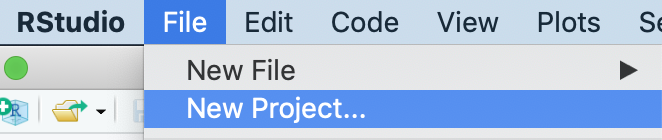

<!DOCTYPE html>

<html>

<head>

<meta charset="utf-8" />
<meta name="generator" content="pandoc" />
<meta http-equiv="X-UA-Compatible" content="IE=EDGE" />


<title> School Shootings in the United States</title>

<html>

<head>
<!-- Global site tag (gtag.js) - Google Analytics -->
<script async src="https://www.googletagmanager.com/gtag/js?id=G-SEKLK099WC"></script>
<script>
  window.dataLayer = window.dataLayer || [];
  function gtag(){dataLayer.push(arguments);}
  gtag('js', new Date());

  gtag('config', 'G-SEKLK099WC');
</script>
</head>

<body>


</body>
</html>
<!-- HEAD_CONTENT -->

<style type="text/css">
  code{white-space: pre-wrap;}
  span.smallcaps{font-variant: small-caps;}
  span.underline{text-decoration: underline;}
  div.column{display: inline-block; vertical-align: top; width: 50%;}
  div.hanging-indent{margin-left: 1.5em; text-indent: -1.5em;}
  ul.task-list{list-style: none;}
    </style>


<style type="text/css">
  code {
    white-space: pre;
  }
  .sourceCode {
    overflow: visible;
  }
</style>
<style type="text/css" data-origin="pandoc">
pre > code.sourceCode { white-space: pre; position: relative; }
pre > code.sourceCode > span { display: inline-block; line-height: 1.25; }
pre > code.sourceCode > span:empty { height: 1.2em; }
.sourceCode { overflow: visible; }
code.sourceCode > span { color: inherit; text-decoration: inherit; }
div.sourceCode { margin: 1em 0; }
pre.sourceCode { margin: 0; }
@media screen {
div.sourceCode { overflow: auto; }
}
@media print {
pre > code.sourceCode { white-space: pre-wrap; }
pre > code.sourceCode > span { text-indent: -5em; padding-left: 5em; }
}
pre.numberSource code
  { counter-reset: source-line 0; }
pre.numberSource code > span
  { position: relative; left: -4em; counter-increment: source-line; }
pre.numberSource code > span > a:first-child::before
  { content: counter(source-line);
    position: relative; left: -1em; text-align: right; vertical-align: baseline;
    border: none; display: inline-block;
    -webkit-touch-callout: none; -webkit-user-select: none;
    -khtml-user-select: none; -moz-user-select: none;
    -ms-user-select: none; user-select: none;
    padding: 0 4px; width: 4em;
    color: #aaaaaa;
  }
pre.numberSource { margin-left: 3em; border-left: 1px solid #aaaaaa;  padding-left: 4px; }
div.sourceCode
  {  background-color: #f8f8f8; }
@media screen {
pre > code.sourceCode > span > a:first-child::before { text-decoration: underline; }
}
code span.al { color: #ef2929; } /* Alert */
code span.an { color: #8f5902; font-weight: bold; font-style: italic; } /* Annotation */
code span.at { color: #c4a000; } /* Attribute */
code span.bn { color: #0000cf; } /* BaseN */
code span.cf { color: #204a87; font-weight: bold; } /* ControlFlow */
code span.ch { color: #4e9a06; } /* Char */
code span.cn { color: #000000; } /* Constant */
code span.co { color: #8f5902; font-style: italic; } /* Comment */
code span.cv { color: #8f5902; font-weight: bold; font-style: italic; } /* CommentVar */
code span.do { color: #8f5902; font-weight: bold; font-style: italic; } /* Documentation */
code span.dt { color: #204a87; } /* DataType */
code span.dv { color: #0000cf; } /* DecVal */
code span.er { color: #a40000; font-weight: bold; } /* Error */
code span.ex { } /* Extension */
code span.fl { color: #0000cf; } /* Float */
code span.fu { color: #000000; } /* Function */
code span.im { } /* Import */
code span.in { color: #8f5902; font-weight: bold; font-style: italic; } /* Information */
code span.kw { color: #204a87; font-weight: bold; } /* Keyword */
code span.op { color: #ce5c00; font-weight: bold; } /* Operator */
code span.ot { color: #8f5902; } /* Other */
code span.pp { color: #8f5902; font-style: italic; } /* Preprocessor */
code span.sc { color: #000000; } /* SpecialChar */
code span.ss { color: #4e9a06; } /* SpecialString */
code span.st { color: #4e9a06; } /* String */
code span.va { color: #000000; } /* Variable */
code span.vs { color: #4e9a06; } /* VerbatimString */
code span.wa { color: #8f5902; font-weight: bold; font-style: italic; } /* Warning */

</style>
<script>
// apply pandoc div.sourceCode style to pre.sourceCode instead
(function() {
  var sheets = document.styleSheets;
  for (var i = 0; i < sheets.length; i++) {
    if (sheets[i].ownerNode.dataset["origin"] !== "pandoc") continue;
    try { var rules = sheets[i].cssRules; } catch (e) { continue; }
    for (var j = 0; j < rules.length; j++) {
      var rule = rules[j];
      // check if there is a div.sourceCode rule
      if (rule.type !== rule.STYLE_RULE || rule.selectorText !== "div.sourceCode") continue;
      var style = rule.style.cssText;
      // check if color or background-color is set
      if (rule.style.color === '' && rule.style.backgroundColor === '') continue;
      // replace div.sourceCode by a pre.sourceCode rule
      sheets[i].deleteRule(j);
      sheets[i].insertRule('pre.sourceCode{' + style + '}', j);
    }
  }
})();
</script>


<style type="text/css">
#rmd-source-code {
  display: none;
}
</style>


<link rel="stylesheet" href="www/style.css" type="text/css" />


<style type = "text/css">
.main-container {
  max-width: 940px;
  margin-left: auto;
  margin-right: auto;
}
img {
  max-width:100%;
}
.tabbed-pane {
  padding-top: 12px;
}
.html-widget {
  margin-bottom: 20px;
}
button.code-folding-btn:focus {
  outline: none;
}
summary {
  display: list-item;
}
pre code {
  padding: 0;
}
</style>


<!-- tabsets -->

<style type="text/css">
.tabset-dropdown > .nav-tabs {
  display: inline-table;
  max-height: 500px;
  min-height: 44px;
  overflow-y: auto;
  border: 1px solid #ddd;
  border-radius: 4px;
}

.tabset-dropdown > .nav-tabs > li.active:before {
  content: "";
  font-family: 'Glyphicons Halflings';
  display: inline-block;
  padding: 10px;
  border-right: 1px solid #ddd;
}

.tabset-dropdown > .nav-tabs.nav-tabs-open > li.active:before {
  content: "&#xe258;";
  border: none;
}

.tabset-dropdown > .nav-tabs.nav-tabs-open:before {
  content: "";
  font-family: 'Glyphicons Halflings';
  display: inline-block;
  padding: 10px;
  border-right: 1px solid #ddd;
}

.tabset-dropdown > .nav-tabs > li.active {
  display: block;
}

.tabset-dropdown > .nav-tabs > li > a,
.tabset-dropdown > .nav-tabs > li > a:focus,
.tabset-dropdown > .nav-tabs > li > a:hover {
  border: none;
  display: inline-block;
  border-radius: 4px;
  background-color: transparent;
}

.tabset-dropdown > .nav-tabs.nav-tabs-open > li {
  display: block;
  float: none;
}

.tabset-dropdown > .nav-tabs > li {
  display: none;
}
</style>

<!-- code folding -->
<style type="text/css">
.code-folding-btn { margin-bottom: 4px; }
</style>


<style type="text/css">

#section-TOC {
  margin: 25px 0px 20px 0px;
}
@media (max-width: 768px) {
#section-TOC {
  position: relative;
  width: 100%;
}
}

@media print {
.toc-content {
  /* see https://github.com/w3c/csswg-drafts/issues/4434 */
  float: right;
}
}

.toc-content {
  padding-left: 30px;
  padding-right: 40px;
}

div.main-container {
  max-width: 1200px;
}

div.tocify {
  width: 20%;
  max-width: 260px;
  max-height: 85%;
}

@media (min-width: 768px) and (max-width: 991px) {
  div.tocify {
    width: 25%;
  }
}

@media (max-width: 767px) {
  div.tocify {
    width: 100%;
    max-width: none;
  }
}

.tocify ul, .tocify li {
  line-height: 20px;
}

.tocify-subheader .tocify-item {
  font-size: 0.90em;
}

.tocify .list-group-item {
  border-radius: 0px;
}


</style>


</head>

<body>


<div class="container-fluid main-container">


<!-- setup 3col/9col grid for toc_float and main content  -->
<div class="row">
<div class="col-xs-12 col-sm-4 col-md-3">
<div id="section-TOC" class="tocify">
</div>
</div>

<div class="toc-content col-xs-12 col-sm-8 col-md-9">


<div id="section-header">

<div class="btn-group pull-right float-right">
<button type="button" class="btn btn-default btn-xs btn-secondary btn-sm dropdown-toggle" data-toggle="dropdown" aria-haspopup="true" aria-expanded="false"><span>Code</span> <span class="caret"></span></button>
<ul class="dropdown-menu dropdown-menu-right" style="min-width: 50px;">
<li><a id="rmd-download-source" href="#">Download Rmd</a></li>
</ul>
</div>


<h1 class="title toc-ignore"><p> School Shootings in the United States</p></h1>

</div>


<!-- code for including logo in toc: -->
<!-- <style> -->
<!-- #TOC { -->
<!--   background: url("https://opencasestudies.github.io/img/icon-bahi.png"); -->
<!--   background-size: contain; -->
<!--   padding-top: 240px !important; -->
<!--   background-repeat: no-repeat; -->
<!-- } -->
<!-- </style> -->
<!-- (not working for interactive currently, needs to be investigated) -->
<!-- Open all links in new tab-->
<p><base target="_blank"/></p>
<div align="left" id="google_translate_element",></div>
<script type="text/javascript" src='//translate.google.com/translate_a/element.js?cb=googleTranslateElementInit'></script>
<script type="text/javascript">
function googleTranslateElementInit() {
  new google.translate.TranslateElement({pageLanguage: 'en'}, 'google_translate_element');
}
</script>
<p>We will begin by loading the packages that we will need:</p>
<div class="sourceCode" id="section-cb1"><pre class="sourceCode r"><code class="sourceCode r"><span id="section-cb1-1"><a href="#section-cb1-1" aria-hidden="true" tabindex="-1"></a><span class="fu">library</span>(here)</span>
<span id="section-cb1-2"><a href="#section-cb1-2" aria-hidden="true" tabindex="-1"></a><span class="fu">library</span>(readr)</span>
<span id="section-cb1-3"><a href="#section-cb1-3" aria-hidden="true" tabindex="-1"></a><span class="fu">library</span>(googlesheets4)</span>
<span id="section-cb1-4"><a href="#section-cb1-4" aria-hidden="true" tabindex="-1"></a><span class="fu">library</span>(tibble)</span>
<span id="section-cb1-5"><a href="#section-cb1-5" aria-hidden="true" tabindex="-1"></a><span class="fu">library</span>(dplyr)</span>
<span id="section-cb1-6"><a href="#section-cb1-6" aria-hidden="true" tabindex="-1"></a><span class="fu">library</span>(stringr)</span>
<span id="section-cb1-7"><a href="#section-cb1-7" aria-hidden="true" tabindex="-1"></a><span class="fu">library</span>(magrittr)</span>
<span id="section-cb1-8"><a href="#section-cb1-8" aria-hidden="true" tabindex="-1"></a><span class="fu">library</span>(tidyr)</span>
<span id="section-cb1-9"><a href="#section-cb1-9" aria-hidden="true" tabindex="-1"></a><span class="fu">library</span>(ggmap)</span>
<span id="section-cb1-10"><a href="#section-cb1-10" aria-hidden="true" tabindex="-1"></a><span class="fu">library</span>(sf)</span>
<span id="section-cb1-11"><a href="#section-cb1-11" aria-hidden="true" tabindex="-1"></a><span class="fu">library</span>(lubridate)</span>
<span id="section-cb1-12"><a href="#section-cb1-12" aria-hidden="true" tabindex="-1"></a><span class="fu">library</span>(DT)</span>
<span id="section-cb1-13"><a href="#section-cb1-13" aria-hidden="true" tabindex="-1"></a><span class="fu">library</span>(htmltools)</span>
<span id="section-cb1-14"><a href="#section-cb1-14" aria-hidden="true" tabindex="-1"></a><span class="fu">library</span>(ggplot2)</span>
<span id="section-cb1-15"><a href="#section-cb1-15" aria-hidden="true" tabindex="-1"></a><span class="fu">library</span>(forcats)</span>
<span id="section-cb1-16"><a href="#section-cb1-16" aria-hidden="true" tabindex="-1"></a><span class="fu">library</span>(ggforce)</span>
<span id="section-cb1-17"><a href="#section-cb1-17" aria-hidden="true" tabindex="-1"></a><span class="fu">library</span>(waffle)</span>
<span id="section-cb1-18"><a href="#section-cb1-18" aria-hidden="true" tabindex="-1"></a><span class="fu">library</span>(poliscidata)</span>
<span id="section-cb1-19"><a href="#section-cb1-19" aria-hidden="true" tabindex="-1"></a><span class="fu">library</span>(flexdashboard)</span>
<span id="section-cb1-20"><a href="#section-cb1-20" aria-hidden="true" tabindex="-1"></a><span class="fu">library</span>(shiny)</span>
<span id="section-cb1-21"><a href="#section-cb1-21" aria-hidden="true" tabindex="-1"></a><span class="fu">library</span>(leaflet)</span>
<span id="section-cb1-22"><a href="#section-cb1-22" aria-hidden="true" tabindex="-1"></a><span class="fu">library</span>(maps)</span>
<span id="section-cb1-23"><a href="#section-cb1-23" aria-hidden="true" tabindex="-1"></a><span class="fu">library</span>(vembedr)</span>
<span id="section-cb1-24"><a href="#section-cb1-24" aria-hidden="true" tabindex="-1"></a><span class="fu">library</span>(OCSdata)</span></code></pre></div>
<div id="section-data-analysis-and-visualization" class="section level1">
<h1><strong>Data Analysis and Visualization</strong></h1>
<hr />
<p>If you have been following along but stopped, we could load our data like so:</p>
<div class="sourceCode" id="section-cb2"><pre class="sourceCode r"><code class="sourceCode r"><span id="section-cb2-1"><a href="#section-cb2-1" aria-hidden="true" tabindex="-1"></a><span class="fu">load</span>(here<span class="sc">::</span><span class="fu">here</span>(<span class="st">&quot;data&quot;</span>, <span class="st">&quot;wrangled&quot;</span>, <span class="st">&quot;shooting_data_wrangled_pre_map.rda&quot;</span>))</span>
<span id="section-cb2-2"><a href="#section-cb2-2" aria-hidden="true" tabindex="-1"></a><span class="fu">load</span>(here<span class="sc">::</span><span class="fu">here</span>(<span class="st">&quot;data&quot;</span>, <span class="st">&quot;wrangled&quot;</span>, <span class="st">&quot;shooting_data_wrangled_for_map.rda&quot;</span>))</span></code></pre></div>
<p>We need the wangled data that is prepared both for the map and the data just before the last wrangling step Geometry lists with the <code>sf</code> package] to prepare for the map because we removed some events that did not have addresses that were identified by Google (had <code>NA</code> values for latitude or longitude). We want to use data for all events for our statistics, tables, and plots.</p>
<div id="section-section" class="section level4 click_to_expand_block">
<h4 class="click_to_expand_block"></h4>
<details>
<summary>
If you skipped the previous sections click here.
</summary>
<p>First you need to install the <code>OCSdata</code> package:</p>
<div class="sourceCode" id="section-cb3"><pre class="sourceCode r"><code class="sourceCode r"><span id="section-cb3-1"><a href="#section-cb3-1" aria-hidden="true" tabindex="-1"></a><span class="fu">install.packages</span>(<span class="st">&quot;OCSdata&quot;</span>)</span></code></pre></div>
<p>Then, you may download the wrangled data <code>.rda</code> files like so:</p>
<div class="sourceCode" id="section-cb4"><pre class="sourceCode r"><code class="sourceCode r"><span id="section-cb4-1"><a href="#section-cb4-1" aria-hidden="true" tabindex="-1"></a><span class="co"># library(OCSdata)</span></span>
<span id="section-cb4-2"><a href="#section-cb4-2" aria-hidden="true" tabindex="-1"></a><span class="fu">wrangled_rda</span>(<span class="st">&quot;ocs-bp-school-shootings-dashboard&quot;</span>)</span></code></pre></div>
<p>To load the downloaded data into your environment, you may double click on each of the <code>.rda</code> files in Rstudio or using the <code>load()</code> function.</p>
<p>If the package does not work for you, two RDA files (stands for R data) of the data can be found <a href="https://github.com/opencasestudies/ocs-bp-school-shootings-dashboard/tree/master/data/wrangled">here</a> or slightly more directly <a href="https://raw.githubusercontent.com/opencasestudies/ocs-bp-school-shootings-dashboard/master/data/wrangled/shooting_data_wrangled_for_map.rda">here</a> and <a href="https://raw.githubusercontent.com/opencasestudies/ocs-bp-school-shootings-dashboard/master/data/wrangled/shooting_data_wrangled_pre_map.rda">here</a>. Download these files and then place them in your current working directory. We recommend using an RStudio project and the <a href="https://github.com/jennybc/here_here"><code>here</code> package</a> to navigate to your files more easily.</p>
<p>We have put these files in a directory called “wrangled” within a directory called “data” within our working directory (which has a .Rproj file).</p>
<div class="sourceCode" id="section-cb5"><pre class="sourceCode r"><code class="sourceCode r"><span id="section-cb5-1"><a href="#section-cb5-1" aria-hidden="true" tabindex="-1"></a><span class="fu">load</span>(here<span class="sc">::</span><span class="fu">here</span>(<span class="st">&quot;data&quot;</span>, <span class="st">&quot;wrangled&quot;</span>, <span class="st">&quot;shooting_data_wrangled_pre_map.rda&quot;</span>))</span>
<span id="section-cb5-2"><a href="#section-cb5-2" aria-hidden="true" tabindex="-1"></a><span class="fu">load</span>(here<span class="sc">::</span><span class="fu">here</span>(<span class="st">&quot;data&quot;</span>, <span class="st">&quot;wrangled&quot;</span>, <span class="st">&quot;shooting_data_wrangled_for_map.rda&quot;</span>))</span></code></pre></div>
<hr style="height:1px;border:none;color:#333;background-color:#333;" />
<details>
<summary>
Click here to see more about creating new projects in RStudio.
</summary>
<p>You can create a project by going to the File menu of RStudio like so:</p>
<p></p>
<p>You can also do so by clicking the project button:</p>
<p></p>
<p>See <a href="https://support.rstudio.com/hc/en-us/articles/200526207-Using-Projects">here</a> to learn more about using RStudio projects.</p>
</details>
<hr style="height:1px;border:none;color:#333;background-color:#333;" />
</details>
</div>
<div id="section-section-1" class="section level4">
<h4></h4>
<p>Luckily, our data is already in pretty good shape, but we want to make our data more useful for our dashboard.</p>
<p>Let’s shorten the name of the data that was wrangled up to the last step for the map. We will use <code>shooting_data</code>.</p>
<div class="sourceCode" id="section-cb6"><pre class="sourceCode r"><code class="sourceCode r"><span id="section-cb6-1"><a href="#section-cb6-1" aria-hidden="true" tabindex="-1"></a>shooting_data <span class="ot">&lt;-</span>shooting_data_wrangled_pre_map</span></code></pre></div>
<p>We will also rename the data that is wrangled for the map to a shorter name:</p>
<div class="sourceCode" id="section-cb7"><pre class="sourceCode r"><code class="sourceCode r"><span id="section-cb7-1"><a href="#section-cb7-1" aria-hidden="true" tabindex="-1"></a>shooting_data_for_map <span class="ot">&lt;-</span> shooting_data_wrangled_for_map</span></code></pre></div>
<p>Let’s double check that our data is expected:</p>
<div class="sourceCode" id="section-cb8"><pre class="sourceCode r"><code class="sourceCode r"><span id="section-cb8-1"><a href="#section-cb8-1" aria-hidden="true" tabindex="-1"></a><span class="fu">dim</span>(shooting_data)</span></code></pre></div>
<pre><code>[1] 1556   52</code></pre>
<div class="sourceCode" id="section-cb10"><pre class="sourceCode r"><code class="sourceCode r"><span id="section-cb10-1"><a href="#section-cb10-1" aria-hidden="true" tabindex="-1"></a><span class="fu">dim</span>(shooting_data_for_map)</span></code></pre></div>
<pre><code>[1] 1551   52</code></pre>
<p>Great, looks like we indeed have more rows in our <code>shooting_data</code> as we would expect.</p>
<p>There are several elements we would like to include in our dashboard.</p>
<p>One thing we would like is an interactive table.</p>
</div>
<div id="section-interactive-table" class="section level2">
<h2><strong>Interactive Table</strong></h2>
<hr />
<p>We can do this using the <code>datatable()</code> function from the <code>DT</code> package.</p>
<div class="sourceCode" id="section-cb12"><pre class="sourceCode r"><code class="sourceCode r"><span id="section-cb12-1"><a href="#section-cb12-1" aria-hidden="true" tabindex="-1"></a>DT<span class="sc">::</span><span class="fu">datatable</span>(shooting_data)</span></code></pre></div>
<p>This creates a searchable table and the order in which the data is displayed can be toggled to change for each variable.</p>
<p>However, we have many variables or columns in our dataset, so this can be overwhelming. Instead of displaying all of the variables, let’s choose only some of the most interesting to display in our dashboard.</p>
<!-- ```{r} -->
<!-- DT_table <- -->
<!--   shooting_data %>% -->
<!--   dplyr::select(Date, -->
<!--                 School, -->
<!--                 City, -->
<!--                 State, -->
<!--                 `Killed (includes shooter)`, -->
<!--                 `Narrative (Detailed Summary/ Background)`) %>% -->
<!--   rename("Deaths" = `Killed (includes shooter)`) %>% -->
<!--   rename("Narrative" = `Narrative (Detailed Summary/ Background)`) -->
<!-- DT::datatable(DT_table) -->
<!-- ``` -->
<p>Next, we will make some data visualizations.</p>
</div>
<div id="section-yearly-shootings" class="section level2">
<h2><strong>Yearly Shootings</strong></h2>
<hr />
<p>We would like to create a plot of the number of school shootings per year.</p>
<p>To do this, we will count the number of school shootings per year using the <code>count()</code> function from the <code>dplyr</code> package. We specify that we want to count the unique values of the <code>Date_year</code> variable and name the new column <code>Shootings</code>.</p>
<div class="sourceCode" id="section-cb13"><pre class="sourceCode r"><code class="sourceCode r"><span id="section-cb13-1"><a href="#section-cb13-1" aria-hidden="true" tabindex="-1"></a>shootings_per_year <span class="ot">&lt;-</span></span>
<span id="section-cb13-2"><a href="#section-cb13-2" aria-hidden="true" tabindex="-1"></a>  shooting_data <span class="sc">%&gt;%</span></span>
<span id="section-cb13-3"><a href="#section-cb13-3" aria-hidden="true" tabindex="-1"></a>  <span class="fu">count</span>(Date_year, <span class="at">name =</span> <span class="st">&quot;Shootings&quot;</span>)</span>
<span id="section-cb13-4"><a href="#section-cb13-4" aria-hidden="true" tabindex="-1"></a></span>
<span id="section-cb13-5"><a href="#section-cb13-5" aria-hidden="true" tabindex="-1"></a>shootings_per_year</span></code></pre></div>
<pre><code># A tibble: 51 x 2
   Date_year Shootings
       &lt;dbl&gt;     &lt;int&gt;
 1      1970        20
 2      1971        21
 3      1972        18
 4      1973        18
 5      1974        16
 6      1975        14
 7      1976        11
 8      1977        16
 9      1978        16
10      1979        14
# ... with 41 more rows</code></pre>
<p>Good, this looks as expected.</p>
<p>Now to make a plot of this data we will use the <code>ggplot2</code> package.</p>
<div id="section-section-2" class="section level4 click_to_expand_block">
<h4 class="click_to_expand_block"></h4>
<details>
<summary>
Click here for an introduction to <code>ggplot2</code>.
</summary>
<p>The <a href="http://ggplot2.tidyverse.org">ggplot2 package</a> is generally intuitive for beginners because it is based on a <a href="http://vita.had.co.nz/papers/layered-grammar.html">grammar of graphics</a> or the <code>gg</code> in <code>ggplot2</code>. The idea is that you can construct many sentences by learning just a few nouns, adjectives, and verbs. There are specific “words” that we will need to learn and once we do, you will be able to create (or “write”) hundreds of different plots.</p>
<p>The critical part to making graphics using <code>ggplot2</code> is the data needs to be in a <em>tidy</em> format. Given that we have just spent time putting our data in <em>tidy</em> format, we are primed to take advantage of all that <code>ggplot2</code> has to offer!</p>
<p>We will show how it is easy to pipe <em>tidy</em> data (output) as input to other functions that create plots. This all works because we are working within the <em>tidyverse</em>.</p>
<p><strong>What is the <code>ggplot()</code> function?</strong> As explained by Hadley Wickham:</p>
<blockquote>
<p>The grammar tells us that a statistical graphic is a mapping from data to aesthetic attributes (colour, shape, size) of geometric objects (points, lines, bars). The plot may also contain statistical transformations of the data and is drawn on a specific coordinates system.</p>
</blockquote>
<p><code>ggplot2</code> Terminology:</p>
<ul>
<li><strong>ggplot</strong> - the main function where you specify the dataset and variables to plot (this is where we define the <code>x</code> and <code>y</code> variable names)</li>
<li><strong>geoms</strong> - geometric objects
<ul>
<li>e.g. <code>geom_point()</code>, <code>geom_bar()</code>, <code>geom_line()</code>, <code>geom_histogram()</code></li>
</ul></li>
<li><strong>aes</strong> - aesthetics
<ul>
<li>shape, transparency, color, fill, line types</li>
</ul></li>
<li><strong>scales</strong> - define how your data will be plotted
<ul>
<li>continuous, discrete, log, etc</li>
</ul></li>
</ul>
<p>The function <code>aes()</code> is an aesthetic mapping function inside the <code>ggplot()</code> object. We use this function to specify plot attributes (e.g. <code>x</code> and <code>y</code> variable names) that will not change as we add more layers.</p>
<p>Anything that goes in the <code>ggplot()</code> object becomes a global setting. From there, we use the <code>geom</code> objects to add more layers to the base <code>ggplot()</code> object. These will define what we are interested in illustrating using the data.</p>
</details>
</div>
<div id="section-section-3" class="section level4">
<h4></h4>
<hr />
<p>For more of an introduction on creating plots with <code>ggplot2</code> , see this <a href="https://opencasestudies.github.io/ocs-bp-co2-emissions/">case study</a></p>
<hr />
<p>First, we start with the <code>ggplot()</code> function from the <code>ggplot2</code> package.</p>
<p>This function requires that the aesthetics <code>aes()</code> be specified. This involves choosing what variable will be plotted on the x-axis and the y-axis.</p>
<div class="sourceCode" id="section-cb15"><pre class="sourceCode r"><code class="sourceCode r"><span id="section-cb15-1"><a href="#section-cb15-1" aria-hidden="true" tabindex="-1"></a>shootings_per_year <span class="sc">%&gt;%</span></span>
<span id="section-cb15-2"><a href="#section-cb15-2" aria-hidden="true" tabindex="-1"></a>    <span class="fu">ggplot</span>(<span class="fu">aes</span>(<span class="at">x =</span> Date_year, <span class="at">y =</span> Shootings))</span></code></pre></div>
<p></p>
<p>Using the <code>ggplot()</code> function alone will create an empty plot area. To make our plot not empty, we need to select one of the <code>geom_*</code> functions of the <code>ggplot2</code> package to specify what type of plot we want to create.</p>
<p>Assuming the <code>ggplot2</code> library is loaded, type <code>geom</code> into the RStudio console and you will see many options to scroll through.</p>
<p>Here, we use a <code>geom_col()</code> plot, which is a particular type of bar plot that uses the actual values to plot, rather than counts, which is the default of <code>geom_bar()</code>. We will specify with the <code>fill</code> argument, that we want our bars to be filled with the color black.</p>
<div class="sourceCode" id="section-cb16"><pre class="sourceCode r"><code class="sourceCode r"><span id="section-cb16-1"><a href="#section-cb16-1" aria-hidden="true" tabindex="-1"></a>shootings_per_year <span class="sc">%&gt;%</span></span>
<span id="section-cb16-2"><a href="#section-cb16-2" aria-hidden="true" tabindex="-1"></a>    <span class="fu">ggplot</span>(<span class="fu">aes</span>(<span class="at">x =</span> Date_year, <span class="at">y =</span> Shootings)) <span class="sc">+</span></span>
<span id="section-cb16-3"><a href="#section-cb16-3" aria-hidden="true" tabindex="-1"></a>    <span class="fu">geom_col</span>(<span class="at">fill =</span> <span class="st">&quot;black&quot;</span>)</span></code></pre></div>
<p></p>
<p>We also modify the x-axis using the <code>scale_x_continuous()</code> function. This function allows for specification of the range or limits of the axis using the <code>limits</code> argument. We can use the base <code>seq()</code> function to create a sequence of numbers for each tick mark.</p>
<p>We can add labels to our plot using the <code>labs()</code> function from <code>ggplot2</code>. This has arguments such as <code>x</code> and <code>y</code> for the axes and <code>title</code> and <code>subtitle</code> for titles. We can use <code>NULL</code> to remove a label. For example to remove the x-axis label we can use <code>x = NULL</code></p>
<p>We will also modify the overall aesthetics of the plot using a <code>theme_*</code> function. See <a href="https://ggplot2.tidyverse.org/reference/ggtheme.html">here</a> for a list of options.</p>
<div class="sourceCode" id="section-cb17"><pre class="sourceCode r"><code class="sourceCode r"><span id="section-cb17-1"><a href="#section-cb17-1" aria-hidden="true" tabindex="-1"></a>start <span class="ot">&lt;-</span> <span class="dv">1970</span></span>
<span id="section-cb17-2"><a href="#section-cb17-2" aria-hidden="true" tabindex="-1"></a>end <span class="ot">&lt;-</span> <span class="dv">2020</span></span>
<span id="section-cb17-3"><a href="#section-cb17-3" aria-hidden="true" tabindex="-1"></a></span>
<span id="section-cb17-4"><a href="#section-cb17-4" aria-hidden="true" tabindex="-1"></a>shootings_per_year_p <span class="ot">&lt;-</span></span>
<span id="section-cb17-5"><a href="#section-cb17-5" aria-hidden="true" tabindex="-1"></a>  shootings_per_year <span class="sc">%&gt;%</span></span>
<span id="section-cb17-6"><a href="#section-cb17-6" aria-hidden="true" tabindex="-1"></a>    <span class="fu">ggplot</span>(<span class="fu">aes</span>(<span class="at">x =</span> Date_year, <span class="at">y =</span> Shootings)) <span class="sc">+</span></span>
<span id="section-cb17-7"><a href="#section-cb17-7" aria-hidden="true" tabindex="-1"></a>      <span class="fu">geom_col</span>(<span class="at">fill =</span> <span class="st">&quot;black&quot;</span>) <span class="sc">+</span></span>
<span id="section-cb17-8"><a href="#section-cb17-8" aria-hidden="true" tabindex="-1"></a>      <span class="fu">scale_x_continuous</span>(<span class="at">breaks =</span> <span class="fu">seq</span>(start, end, <span class="at">by =</span> <span class="dv">5</span>),</span>
<span id="section-cb17-9"><a href="#section-cb17-9" aria-hidden="true" tabindex="-1"></a>                         <span class="at">labels =</span> <span class="fu">seq</span>(start, end, <span class="at">by =</span> <span class="dv">5</span>),</span>
<span id="section-cb17-10"><a href="#section-cb17-10" aria-hidden="true" tabindex="-1"></a>                         <span class="at">limits =</span> <span class="fu">c</span>(start<span class="dv">-1</span>, end<span class="sc">+</span><span class="dv">1</span>)) <span class="sc">+</span></span>
<span id="section-cb17-11"><a href="#section-cb17-11" aria-hidden="true" tabindex="-1"></a>      <span class="fu">theme_minimal</span>() <span class="sc">+</span></span>
<span id="section-cb17-12"><a href="#section-cb17-12" aria-hidden="true" tabindex="-1"></a>      <span class="fu">labs</span>(<span class="at">title =</span> <span class="st">&quot;Yearly School Shootings&quot;</span>,</span>
<span id="section-cb17-13"><a href="#section-cb17-13" aria-hidden="true" tabindex="-1"></a>           <span class="at">subtitle =</span> <span class="st">&quot;United States&quot;</span>,</span>
<span id="section-cb17-14"><a href="#section-cb17-14" aria-hidden="true" tabindex="-1"></a>           <span class="at">x =</span> <span class="cn">NULL</span>,</span>
<span id="section-cb17-15"><a href="#section-cb17-15" aria-hidden="true" tabindex="-1"></a>           <span class="at">y =</span> <span class="st">&quot;School Shootings&quot;</span>)</span>
<span id="section-cb17-16"><a href="#section-cb17-16" aria-hidden="true" tabindex="-1"></a></span>
<span id="section-cb17-17"><a href="#section-cb17-17" aria-hidden="true" tabindex="-1"></a>shootings_per_year_p</span></code></pre></div>
<p></p>
</div>
</div>
<div id="section-yearly-deaths" class="section level2">
<h2><strong>Yearly Deaths</strong></h2>
<hr />
<p>Let’s make a similar plot for the number of deaths</p>
<div class="sourceCode" id="section-cb18"><pre class="sourceCode r"><code class="sourceCode r"><span id="section-cb18-1"><a href="#section-cb18-1" aria-hidden="true" tabindex="-1"></a>deaths_per_year<span class="ot">&lt;-</span></span>
<span id="section-cb18-2"><a href="#section-cb18-2" aria-hidden="true" tabindex="-1"></a>  shooting_data <span class="sc">%&gt;%</span></span>
<span id="section-cb18-3"><a href="#section-cb18-3" aria-hidden="true" tabindex="-1"></a>  <span class="fu">group_by</span>(Date_year) <span class="sc">%&gt;%</span></span>
<span id="section-cb18-4"><a href="#section-cb18-4" aria-hidden="true" tabindex="-1"></a>  <span class="fu">summarize</span>(<span class="at">Deaths =</span> <span class="fu">sum</span>(<span class="st">`</span><span class="at">Killed (includes shooter)</span><span class="st">`</span>))</span>
<span id="section-cb18-5"><a href="#section-cb18-5" aria-hidden="true" tabindex="-1"></a></span>
<span id="section-cb18-6"><a href="#section-cb18-6" aria-hidden="true" tabindex="-1"></a>deaths_per_year_p <span class="ot">&lt;-</span></span>
<span id="section-cb18-7"><a href="#section-cb18-7" aria-hidden="true" tabindex="-1"></a>  deaths_per_year <span class="sc">%&gt;%</span></span>
<span id="section-cb18-8"><a href="#section-cb18-8" aria-hidden="true" tabindex="-1"></a>    <span class="fu">ggplot</span>(<span class="fu">aes</span>(<span class="at">x =</span> Date_year, <span class="at">y =</span> Deaths)) <span class="sc">+</span></span>
<span id="section-cb18-9"><a href="#section-cb18-9" aria-hidden="true" tabindex="-1"></a>      <span class="fu">geom_col</span>(<span class="at">fill =</span> <span class="st">&quot;black&quot;</span>) <span class="sc">+</span></span>
<span id="section-cb18-10"><a href="#section-cb18-10" aria-hidden="true" tabindex="-1"></a>      <span class="fu">scale_x_continuous</span>(<span class="at">breaks =</span> <span class="fu">seq</span>(start, end, <span class="at">by =</span> <span class="dv">5</span>),</span>
<span id="section-cb18-11"><a href="#section-cb18-11" aria-hidden="true" tabindex="-1"></a>                         <span class="at">labels =</span> <span class="fu">seq</span>(start, end, <span class="at">by =</span> <span class="dv">5</span>),</span>
<span id="section-cb18-12"><a href="#section-cb18-12" aria-hidden="true" tabindex="-1"></a>                         <span class="at">limits =</span> <span class="fu">c</span>(start<span class="dv">-1</span>, end<span class="sc">+</span><span class="dv">1</span>)) <span class="sc">+</span></span>
<span id="section-cb18-13"><a href="#section-cb18-13" aria-hidden="true" tabindex="-1"></a>      <span class="fu">theme_minimal</span>() <span class="sc">+</span></span>
<span id="section-cb18-14"><a href="#section-cb18-14" aria-hidden="true" tabindex="-1"></a>      <span class="fu">labs</span>(<span class="at">title =</span> <span class="st">&quot;Yearly Deaths Attributable to School Shootings&quot;</span>,</span>
<span id="section-cb18-15"><a href="#section-cb18-15" aria-hidden="true" tabindex="-1"></a>           <span class="at">subtitle =</span> <span class="st">&quot;United States&quot;</span>,</span>
<span id="section-cb18-16"><a href="#section-cb18-16" aria-hidden="true" tabindex="-1"></a>           <span class="at">x =</span> <span class="cn">NULL</span>)</span>
<span id="section-cb18-17"><a href="#section-cb18-17" aria-hidden="true" tabindex="-1"></a></span>
<span id="section-cb18-18"><a href="#section-cb18-18" aria-hidden="true" tabindex="-1"></a>deaths_per_year_p</span></code></pre></div>
<p></p>
<p><strong>Note</strong>: When using the <code>summarize()</code> function, we don’t need to use the <code>mutate()</code> function here.</p>
<p>Next, for the purposes of the dashboard, we actually want to create just one plot that shows both the number of school shootings per year and the number of deaths.</p>
<p>We can do so by combining our <code>shootings_per_year</code> and <code>deaths_per_year</code> tibbles together and making what is called a faceted plot, using the <code>facet_wrap()</code> function to create two plots next to one another.</p>
<p>To combine our data we will use the <code>full_join()</code> function from the <code>dplyr</code> package. This maintains all values from both tibbles.</p>
<p>To do so we will be making our table “longer”, meaning that it will have fewer columns and more rows. See <a href="https://en.wikipedia.org/wiki/Wide_and_narrow_data">here</a> for more information about different table formats, typically referred to as wide and long or sometimes narrow.</p>
<p>We will use the <code>pivot_longer()</code> function from the <code>tidyr</code> package to change the shape of our table.</p>
<p>There are 3 main arguments in this function:</p>
<ol style="list-style-type: decimal">
<li><code>cols</code> - which specifies what columns to collapse</li>
<li><code>names_to</code> - which specifies the name of the new column that will be created that will contain the column names of the columns you are collapsing</li>
<li><code>values_to</code> - which specifies the name of the new column that will be created that will contain the values from the columns you are collapsing</li>
</ol>
<p>To specify that we want to collapse all the columns that have year values, we can choose all those except the <code>Date_year</code> variable by using the <code>-</code> negative operator.</p>
<div class="sourceCode" id="section-cb19"><pre class="sourceCode r"><code class="sourceCode r"><span id="section-cb19-1"><a href="#section-cb19-1" aria-hidden="true" tabindex="-1"></a>per_year <span class="ot">&lt;-</span></span>
<span id="section-cb19-2"><a href="#section-cb19-2" aria-hidden="true" tabindex="-1"></a>  <span class="fu">full_join</span>(shootings_per_year, deaths_per_year)</span>
<span id="section-cb19-3"><a href="#section-cb19-3" aria-hidden="true" tabindex="-1"></a></span>
<span id="section-cb19-4"><a href="#section-cb19-4" aria-hidden="true" tabindex="-1"></a>per_year <span class="sc">%&lt;&gt;%</span></span>
<span id="section-cb19-5"><a href="#section-cb19-5" aria-hidden="true" tabindex="-1"></a>  <span class="fu">pivot_longer</span>(<span class="at">cols =</span> <span class="sc">-</span>Date_year,</span>
<span id="section-cb19-6"><a href="#section-cb19-6" aria-hidden="true" tabindex="-1"></a>               <span class="at">values_to =</span> <span class="st">&quot;events&quot;</span>,</span>
<span id="section-cb19-7"><a href="#section-cb19-7" aria-hidden="true" tabindex="-1"></a>               <span class="at">names_to =</span> <span class="st">&quot;id&quot;</span>)</span>
<span id="section-cb19-8"><a href="#section-cb19-8" aria-hidden="true" tabindex="-1"></a></span>
<span id="section-cb19-9"><a href="#section-cb19-9" aria-hidden="true" tabindex="-1"></a>per_year</span></code></pre></div>
<pre><code># A tibble: 102 x 3
   Date_year id        events
       &lt;dbl&gt; &lt;chr&gt;      &lt;dbl&gt;
 1      1970 Shootings     20
 2      1970 Deaths         8
 3      1971 Shootings     21
 4      1971 Deaths         9
 5      1972 Shootings     18
 6      1972 Deaths         6
 7      1973 Shootings     18
 8      1973 Deaths         6
 9      1974 Shootings     16
10      1974 Deaths        12
# ... with 92 more rows</code></pre>
<p>Hmmm, we see the data type of the <code>id</code> column is a character (<code>&lt;chr&gt;</code>). Let’s convert it to a factor, so that the order in which <code>Shootings</code> and <code>Deaths</code> appear is the order in which they appear first rather than by alphabetical order (which is default).</p>
<p>Using the <code>fct_inorder()</code> function from the <code>forcats</code> package, we can easily reorder the <code>id</code> variable`.</p>
<div class="sourceCode" id="section-cb21"><pre class="sourceCode r"><code class="sourceCode r"><span id="section-cb21-1"><a href="#section-cb21-1" aria-hidden="true" tabindex="-1"></a>per_year <span class="sc">%&lt;&gt;%</span></span>
<span id="section-cb21-2"><a href="#section-cb21-2" aria-hidden="true" tabindex="-1"></a>  <span class="fu">mutate</span>(<span class="at">id =</span> forcats<span class="sc">::</span><span class="fu">fct_inorder</span>(id))</span>
<span id="section-cb21-3"><a href="#section-cb21-3" aria-hidden="true" tabindex="-1"></a></span>
<span id="section-cb21-4"><a href="#section-cb21-4" aria-hidden="true" tabindex="-1"></a>per_year</span></code></pre></div>
<pre><code># A tibble: 102 x 3
   Date_year id        events
       &lt;dbl&gt; &lt;fct&gt;      &lt;dbl&gt;
 1      1970 Shootings     20
 2      1970 Deaths         8
 3      1971 Shootings     21
 4      1971 Deaths         9
 5      1972 Shootings     18
 6      1972 Deaths         6
 7      1973 Shootings     18
 8      1973 Deaths         6
 9      1974 Shootings     16
10      1974 Deaths        12
# ... with 92 more rows</code></pre>
<p>Now since we the new variable for the names is called <code>id</code> we will use this as the variable to create the facet like so: <code>facet_wrap(~id)</code>. We can also specify that we want both plots to have their own y-axis with the <code>scales = "free"</code> argument. This causes each to have the y-axis automatically scaled for the data in each plot. We can then use the <code>scale_y_continuous()</code> function to set both of the y-axes to be the same.</p>
<div class="sourceCode" id="section-cb23"><pre class="sourceCode r"><code class="sourceCode r"><span id="section-cb23-1"><a href="#section-cb23-1" aria-hidden="true" tabindex="-1"></a>per_year <span class="sc">%&gt;%</span></span>
<span id="section-cb23-2"><a href="#section-cb23-2" aria-hidden="true" tabindex="-1"></a>  <span class="fu">ggplot</span>(<span class="fu">aes</span>(<span class="at">x =</span> Date_year, <span class="at">y =</span> events, <span class="at">fill =</span>id)) <span class="sc">+</span></span>
<span id="section-cb23-3"><a href="#section-cb23-3" aria-hidden="true" tabindex="-1"></a>    <span class="fu">geom_col</span>() <span class="sc">+</span></span>
<span id="section-cb23-4"><a href="#section-cb23-4" aria-hidden="true" tabindex="-1"></a>    <span class="fu">facet_wrap</span>(<span class="sc">~</span>id, <span class="at">scales =</span> <span class="st">&quot;free&quot;</span>) <span class="sc">+</span></span>
<span id="section-cb23-5"><a href="#section-cb23-5" aria-hidden="true" tabindex="-1"></a>    <span class="fu">scale_x_continuous</span>(<span class="at">breaks =</span> <span class="fu">seq</span>(start, end, <span class="at">by =</span> <span class="dv">5</span>),</span>
<span id="section-cb23-6"><a href="#section-cb23-6" aria-hidden="true" tabindex="-1"></a>                       <span class="at">labels =</span> <span class="fu">seq</span>(start, end, <span class="at">by =</span> <span class="dv">5</span>),</span>
<span id="section-cb23-7"><a href="#section-cb23-7" aria-hidden="true" tabindex="-1"></a>                       <span class="at">limits =</span> <span class="fu">c</span>(start<span class="dv">-1</span>, end<span class="sc">+</span><span class="dv">1</span>)) <span class="sc">+</span></span>
<span id="section-cb23-8"><a href="#section-cb23-8" aria-hidden="true" tabindex="-1"></a>    <span class="fu">scale_y_continuous</span>(<span class="at">breaks =</span> <span class="fu">seq</span>(<span class="dv">0</span>, <span class="dv">120</span>, <span class="at">by =</span> <span class="dv">30</span>),</span>
<span id="section-cb23-9"><a href="#section-cb23-9" aria-hidden="true" tabindex="-1"></a>                       <span class="at">labels =</span> <span class="fu">seq</span>(<span class="dv">0</span>, <span class="dv">120</span>, <span class="at">by =</span> <span class="dv">30</span>),</span>
<span id="section-cb23-10"><a href="#section-cb23-10" aria-hidden="true" tabindex="-1"></a>                       <span class="at">limits =</span> <span class="fu">c</span>(<span class="dv">0</span>, <span class="dv">121</span>))<span class="sc">+</span></span>
<span id="section-cb23-11"><a href="#section-cb23-11" aria-hidden="true" tabindex="-1"></a>    <span class="fu">theme_minimal</span>() <span class="sc">+</span></span>
<span id="section-cb23-12"><a href="#section-cb23-12" aria-hidden="true" tabindex="-1"></a>    <span class="fu">labs</span>(<span class="at">title =</span> <span class="st">&quot;Yearly Shootings and Deaths Attributable to School Shootings&quot;</span>,</span>
<span id="section-cb23-13"><a href="#section-cb23-13" aria-hidden="true" tabindex="-1"></a>         <span class="at">subtitle =</span> <span class="st">&quot;United States&quot;</span>,</span>
<span id="section-cb23-14"><a href="#section-cb23-14" aria-hidden="true" tabindex="-1"></a>         <span class="at">y =</span> <span class="st">&quot;Number of events&quot;</span>,</span>
<span id="section-cb23-15"><a href="#section-cb23-15" aria-hidden="true" tabindex="-1"></a>         <span class="at">x =</span> <span class="st">&quot;Year&quot;</span>)<span class="sc">+</span></span>
<span id="section-cb23-16"><a href="#section-cb23-16" aria-hidden="true" tabindex="-1"></a>    <span class="fu">scale_fill_manual</span>(<span class="at">values =</span> <span class="fu">c</span>(<span class="st">&quot;black&quot;</span>, <span class="st">&quot;black&quot;</span>))<span class="sc">+</span></span>
<span id="section-cb23-17"><a href="#section-cb23-17" aria-hidden="true" tabindex="-1"></a>    <span class="fu">theme</span>(<span class="at">legend.position =</span> <span class="st">&quot;none&quot;</span>,</span>
<span id="section-cb23-18"><a href="#section-cb23-18" aria-hidden="true" tabindex="-1"></a>          <span class="at">legend.title =</span> <span class="fu">element_blank</span>(),</span>
<span id="section-cb23-19"><a href="#section-cb23-19" aria-hidden="true" tabindex="-1"></a>          <span class="at">axis.text.x =</span> <span class="fu">element_text</span>(<span class="at">angle =</span> <span class="dv">90</span>),</span>
<span id="section-cb23-20"><a href="#section-cb23-20" aria-hidden="true" tabindex="-1"></a>          <span class="at">strip.background =</span><span class="fu">element_rect</span>(<span class="at">fill=</span><span class="st">&quot;cornflowerblue&quot;</span>),</span>
<span id="section-cb23-21"><a href="#section-cb23-21" aria-hidden="true" tabindex="-1"></a>          <span class="at">strip.text =</span> <span class="fu">element_text</span>(<span class="at">colour =</span> <span class="st">&#39;white&#39;</span>, <span class="at">face =</span> <span class="st">&quot;bold&quot;</span>, <span class="at">size =</span> <span class="dv">14</span>))</span></code></pre></div>
<p></p>
<p>Next, we can modify the plot further so that it is more obvious what each plot is showing. We can update the names of the y-axis for each plot by changing the <code>strip.position</code> argument of the <code>facet_wrap()</code> function to be placed on the left rather than above. Currently it is the label in blue that says what the value of the <code>id</code> variable is for each plot. This also requires some modification of the <code>theme()</code> function to place the <code>strip.text</code> outside the plot area and to remove the background.Furthermore, we also change the text using the <code>labeller</code> argument of the <code>facet_wrap()</code> function. The <code>as_labeller()</code> function from the <code>ggplot2</code> package can change out the <code>id</code> values for other text like in the following code:</p>
<div class="sourceCode" id="section-cb24"><pre class="sourceCode r"><code class="sourceCode r"><span id="section-cb24-1"><a href="#section-cb24-1" aria-hidden="true" tabindex="-1"></a>per_year <span class="sc">%&gt;%</span></span>
<span id="section-cb24-2"><a href="#section-cb24-2" aria-hidden="true" tabindex="-1"></a>  <span class="fu">ggplot</span>(<span class="fu">aes</span>(<span class="at">x =</span> Date_year, <span class="at">y =</span> events, <span class="at">fill =</span>id)) <span class="sc">+</span></span>
<span id="section-cb24-3"><a href="#section-cb24-3" aria-hidden="true" tabindex="-1"></a>    <span class="fu">geom_col</span>() <span class="sc">+</span></span>
<span id="section-cb24-4"><a href="#section-cb24-4" aria-hidden="true" tabindex="-1"></a>    <span class="fu">facet_wrap</span>(<span class="sc">~</span>id,</span>
<span id="section-cb24-5"><a href="#section-cb24-5" aria-hidden="true" tabindex="-1"></a>               <span class="at">scales =</span> <span class="st">&quot;free&quot;</span>,</span>
<span id="section-cb24-6"><a href="#section-cb24-6" aria-hidden="true" tabindex="-1"></a>               <span class="at">labeller =</span> <span class="fu">as_labeller</span>(<span class="fu">c</span>(<span class="at">Shootings =</span> <span class="st">&quot;Shootings (# of events)&quot;</span>,</span>
<span id="section-cb24-7"><a href="#section-cb24-7" aria-hidden="true" tabindex="-1"></a>                                        <span class="at">Deaths =</span> <span class="st">&quot;Deaths (# of people)&quot;</span>)),</span>
<span id="section-cb24-8"><a href="#section-cb24-8" aria-hidden="true" tabindex="-1"></a>               <span class="at">strip.position =</span> <span class="st">&quot;left&quot;</span>) <span class="sc">+</span></span>
<span id="section-cb24-9"><a href="#section-cb24-9" aria-hidden="true" tabindex="-1"></a>    <span class="fu">scale_x_continuous</span>(<span class="at">breaks =</span> <span class="fu">seq</span>(start, end, <span class="at">by =</span> <span class="dv">5</span>),</span>
<span id="section-cb24-10"><a href="#section-cb24-10" aria-hidden="true" tabindex="-1"></a>                       <span class="at">labels =</span> <span class="fu">seq</span>(start, end, <span class="at">by =</span> <span class="dv">5</span>),</span>
<span id="section-cb24-11"><a href="#section-cb24-11" aria-hidden="true" tabindex="-1"></a>                       <span class="at">limits =</span> <span class="fu">c</span>(start<span class="dv">-1</span>, end<span class="sc">+</span><span class="dv">1</span>)) <span class="sc">+</span></span>
<span id="section-cb24-12"><a href="#section-cb24-12" aria-hidden="true" tabindex="-1"></a>    <span class="fu">scale_y_continuous</span>(<span class="at">breaks =</span> <span class="fu">seq</span>(<span class="dv">0</span>, <span class="dv">120</span>, <span class="at">by =</span> <span class="dv">30</span>),</span>
<span id="section-cb24-13"><a href="#section-cb24-13" aria-hidden="true" tabindex="-1"></a>                       <span class="at">labels =</span> <span class="fu">seq</span>(<span class="dv">0</span>, <span class="dv">120</span>, <span class="at">by =</span> <span class="dv">30</span>),</span>
<span id="section-cb24-14"><a href="#section-cb24-14" aria-hidden="true" tabindex="-1"></a>                       <span class="at">limits =</span> <span class="fu">c</span>(<span class="dv">0</span>, <span class="dv">121</span>))<span class="sc">+</span></span>
<span id="section-cb24-15"><a href="#section-cb24-15" aria-hidden="true" tabindex="-1"></a>    <span class="fu">theme_minimal</span>() <span class="sc">+</span></span>
<span id="section-cb24-16"><a href="#section-cb24-16" aria-hidden="true" tabindex="-1"></a>    <span class="fu">labs</span>(<span class="at">title =</span> <span class="st">&quot;Yearly Shootings and Deaths Attributable to School Shootings&quot;</span>,</span>
<span id="section-cb24-17"><a href="#section-cb24-17" aria-hidden="true" tabindex="-1"></a>         <span class="at">subtitle =</span> <span class="st">&quot;United States&quot;</span>,</span>
<span id="section-cb24-18"><a href="#section-cb24-18" aria-hidden="true" tabindex="-1"></a>         <span class="at">y =</span> <span class="cn">NULL</span>,</span>
<span id="section-cb24-19"><a href="#section-cb24-19" aria-hidden="true" tabindex="-1"></a>         <span class="at">x =</span> <span class="st">&quot;Year&quot;</span>)<span class="sc">+</span></span>
<span id="section-cb24-20"><a href="#section-cb24-20" aria-hidden="true" tabindex="-1"></a>    <span class="fu">scale_fill_manual</span>(<span class="at">values =</span> <span class="fu">c</span>(<span class="st">&quot;black&quot;</span>, <span class="st">&quot;black&quot;</span>))<span class="sc">+</span></span>
<span id="section-cb24-21"><a href="#section-cb24-21" aria-hidden="true" tabindex="-1"></a>    <span class="fu">theme</span>(<span class="at">legend.position =</span> <span class="st">&quot;none&quot;</span>,</span>
<span id="section-cb24-22"><a href="#section-cb24-22" aria-hidden="true" tabindex="-1"></a>          <span class="at">legend.title =</span> <span class="fu">element_blank</span>(),</span>
<span id="section-cb24-23"><a href="#section-cb24-23" aria-hidden="true" tabindex="-1"></a>          <span class="at">axis.text.x =</span> <span class="fu">element_text</span>(<span class="at">angle =</span> <span class="dv">90</span>),</span>
<span id="section-cb24-24"><a href="#section-cb24-24" aria-hidden="true" tabindex="-1"></a>          <span class="at">strip.background =</span> <span class="fu">element_blank</span>(),</span>
<span id="section-cb24-25"><a href="#section-cb24-25" aria-hidden="true" tabindex="-1"></a>          <span class="at">strip.placement =</span> <span class="st">&quot;outside&quot;</span>,</span>
<span id="section-cb24-26"><a href="#section-cb24-26" aria-hidden="true" tabindex="-1"></a>          <span class="at">strip.text =</span> <span class="fu">element_text</span>(<span class="at">face =</span> <span class="st">&quot;bold&quot;</span>, <span class="at">size =</span> <span class="dv">14</span>))</span></code></pre></div>
<p></p>
<p>Good, Now this is much easier to interpret.</p>
<p>Our last step in this section is to save the style settings of this plot as theme so we can reuse it for future plots. To do this, we use the base <code>function()</code> function:</p>
<div class="sourceCode" id="section-cb25"><pre class="sourceCode r"><code class="sourceCode r"><span id="section-cb25-1"><a href="#section-cb25-1" aria-hidden="true" tabindex="-1"></a>theme_dashboard <span class="ot">&lt;-</span> <span class="cf">function</span>(){</span>
<span id="section-cb25-2"><a href="#section-cb25-2" aria-hidden="true" tabindex="-1"></a>  <span class="fu">theme</span>(<span class="at">legend.position =</span> <span class="st">&quot;none&quot;</span>,</span>
<span id="section-cb25-3"><a href="#section-cb25-3" aria-hidden="true" tabindex="-1"></a>        <span class="at">legend.title =</span> <span class="fu">element_blank</span>(),</span>
<span id="section-cb25-4"><a href="#section-cb25-4" aria-hidden="true" tabindex="-1"></a>        <span class="at">axis.text.x =</span> <span class="fu">element_text</span>(<span class="at">angle =</span> <span class="dv">90</span>, <span class="at">face =</span> <span class="st">&quot;bold&quot;</span>),</span>
<span id="section-cb25-5"><a href="#section-cb25-5" aria-hidden="true" tabindex="-1"></a>        <span class="at">axis.title.x =</span> <span class="fu">element_text</span>(<span class="at">face =</span> <span class="st">&quot;bold&quot;</span>, <span class="at">size =</span> <span class="dv">14</span>),</span>
<span id="section-cb25-6"><a href="#section-cb25-6" aria-hidden="true" tabindex="-1"></a>        <span class="at">strip.background =</span> <span class="fu">element_blank</span>(),</span>
<span id="section-cb25-7"><a href="#section-cb25-7" aria-hidden="true" tabindex="-1"></a>        <span class="at">strip.placement =</span> <span class="st">&quot;outside&quot;</span>,</span>
<span id="section-cb25-8"><a href="#section-cb25-8" aria-hidden="true" tabindex="-1"></a>        <span class="at">strip.text =</span> <span class="fu">element_text</span>(<span class="at">face =</span> <span class="st">&quot;bold&quot;</span>, <span class="at">size =</span> <span class="dv">14</span>))</span>
<span id="section-cb25-9"><a href="#section-cb25-9" aria-hidden="true" tabindex="-1"></a>}</span></code></pre></div>
</div>
<div id="section-yearly-cumulative-shootings" class="section level2">
<h2><strong>Yearly Cumulative Shootings</strong></h2>
<hr />
<p>Now let’s make another plot of the cumulative deaths each year including those of the previous years. In this case we can use the <code>shootings_per_year</code> object that we previously made.</p>
<div class="sourceCode" id="section-cb26"><pre class="sourceCode r"><code class="sourceCode r"><span id="section-cb26-1"><a href="#section-cb26-1" aria-hidden="true" tabindex="-1"></a>shootings_per_year</span></code></pre></div>
<pre><code># A tibble: 51 x 2
   Date_year Shootings
       &lt;dbl&gt;     &lt;int&gt;
 1      1970        20
 2      1971        21
 3      1972        18
 4      1973        18
 5      1974        16
 6      1975        14
 7      1976        11
 8      1977        16
 9      1978        16
10      1979        14
# ... with 41 more rows</code></pre>
<p>However, we want to add a new variable using the <code>mutate</code> function called <code>n_cum_sum</code> by using the <code>cumsum()</code> function to calculate a cumulative sum based on the yearly count.</p>
<div class="sourceCode" id="section-cb28"><pre class="sourceCode r"><code class="sourceCode r"><span id="section-cb28-1"><a href="#section-cb28-1" aria-hidden="true" tabindex="-1"></a>shootings_per_year_cum <span class="ot">&lt;-</span> shootings_per_year<span class="sc">%&gt;%</span></span>
<span id="section-cb28-2"><a href="#section-cb28-2" aria-hidden="true" tabindex="-1"></a>    <span class="fu">mutate</span>(<span class="at">Shootings =</span> <span class="fu">cumsum</span>(Shootings))</span>
<span id="section-cb28-3"><a href="#section-cb28-3" aria-hidden="true" tabindex="-1"></a></span>
<span id="section-cb28-4"><a href="#section-cb28-4" aria-hidden="true" tabindex="-1"></a>deaths_per_year_cum <span class="ot">&lt;-</span> deaths_per_year<span class="sc">%&gt;%</span></span>
<span id="section-cb28-5"><a href="#section-cb28-5" aria-hidden="true" tabindex="-1"></a>    <span class="fu">mutate</span>(<span class="at">Deaths =</span> <span class="fu">cumsum</span>(Deaths))</span>
<span id="section-cb28-6"><a href="#section-cb28-6" aria-hidden="true" tabindex="-1"></a></span>
<span id="section-cb28-7"><a href="#section-cb28-7" aria-hidden="true" tabindex="-1"></a>shootings_per_year_cum</span></code></pre></div>
<pre><code># A tibble: 51 x 2
   Date_year Shootings
       &lt;dbl&gt;     &lt;int&gt;
 1      1970        20
 2      1971        41
 3      1972        59
 4      1973        77
 5      1974        93
 6      1975       107
 7      1976       118
 8      1977       134
 9      1978       150
10      1979       164
# ... with 41 more rows</code></pre>
<p>Next, we join these tables together</p>
<div class="sourceCode" id="section-cb30"><pre class="sourceCode r"><code class="sourceCode r"><span id="section-cb30-1"><a href="#section-cb30-1" aria-hidden="true" tabindex="-1"></a>per_year_cum <span class="ot">&lt;-</span></span>
<span id="section-cb30-2"><a href="#section-cb30-2" aria-hidden="true" tabindex="-1"></a>  <span class="fu">full_join</span>(shootings_per_year_cum, deaths_per_year_cum)</span>
<span id="section-cb30-3"><a href="#section-cb30-3" aria-hidden="true" tabindex="-1"></a></span>
<span id="section-cb30-4"><a href="#section-cb30-4" aria-hidden="true" tabindex="-1"></a>per_year_cum <span class="sc">%&lt;&gt;%</span></span>
<span id="section-cb30-5"><a href="#section-cb30-5" aria-hidden="true" tabindex="-1"></a>  <span class="fu">pivot_longer</span>(<span class="at">cols =</span> <span class="fu">c</span>(Shootings,Deaths ),</span>
<span id="section-cb30-6"><a href="#section-cb30-6" aria-hidden="true" tabindex="-1"></a>               <span class="at">values_to =</span> <span class="st">&quot;events&quot;</span>,</span>
<span id="section-cb30-7"><a href="#section-cb30-7" aria-hidden="true" tabindex="-1"></a>               <span class="at">names_to =</span> <span class="st">&quot;id&quot;</span>)</span>
<span id="section-cb30-8"><a href="#section-cb30-8" aria-hidden="true" tabindex="-1"></a></span>
<span id="section-cb30-9"><a href="#section-cb30-9" aria-hidden="true" tabindex="-1"></a>per_year_cum</span></code></pre></div>
<pre><code># A tibble: 102 x 3
   Date_year id        events
       &lt;dbl&gt; &lt;chr&gt;      &lt;dbl&gt;
 1      1970 Shootings     20
 2      1970 Deaths         8
 3      1971 Shootings     41
 4      1971 Deaths        17
 5      1972 Shootings     59
 6      1972 Deaths        23
 7      1973 Shootings     77
 8      1973 Deaths        29
 9      1974 Shootings     93
10      1974 Deaths        41
# ... with 92 more rows</code></pre>
<p>Good, this looks like we would expect.</p>
<p>Now let’s make a plot like we did before:</p>
<div class="sourceCode" id="section-cb32"><pre class="sourceCode r"><code class="sourceCode r"><span id="section-cb32-1"><a href="#section-cb32-1" aria-hidden="true" tabindex="-1"></a>per_year_cum <span class="sc">%&lt;&gt;%</span></span>
<span id="section-cb32-2"><a href="#section-cb32-2" aria-hidden="true" tabindex="-1"></a>  <span class="fu">mutate</span>(<span class="at">id =</span> forcats<span class="sc">::</span><span class="fu">fct_inorder</span>(id))</span>
<span id="section-cb32-3"><a href="#section-cb32-3" aria-hidden="true" tabindex="-1"></a></span>
<span id="section-cb32-4"><a href="#section-cb32-4" aria-hidden="true" tabindex="-1"></a>per_year_cum <span class="sc">%&gt;%</span></span>
<span id="section-cb32-5"><a href="#section-cb32-5" aria-hidden="true" tabindex="-1"></a>    <span class="fu">ggplot</span>(<span class="fu">aes</span>(<span class="at">x =</span> Date_year, <span class="at">y =</span> events, <span class="at">fill =</span> id)) <span class="sc">+</span></span>
<span id="section-cb32-6"><a href="#section-cb32-6" aria-hidden="true" tabindex="-1"></a>      <span class="fu">geom_col</span>() <span class="sc">+</span></span>
<span id="section-cb32-7"><a href="#section-cb32-7" aria-hidden="true" tabindex="-1"></a>      <span class="fu">facet_wrap</span>(<span class="sc">~</span>id, <span class="at">scales =</span> <span class="st">&quot;free&quot;</span>,</span>
<span id="section-cb32-8"><a href="#section-cb32-8" aria-hidden="true" tabindex="-1"></a>                 <span class="at">labeller =</span> <span class="fu">as_labeller</span>(<span class="fu">c</span>(<span class="at">Shootings =</span> <span class="st">&quot;Shootings (# of events)&quot;</span>,</span>
<span id="section-cb32-9"><a href="#section-cb32-9" aria-hidden="true" tabindex="-1"></a>                                          <span class="at">Deaths =</span> <span class="st">&quot;Deaths (# of people)&quot;</span>)),</span>
<span id="section-cb32-10"><a href="#section-cb32-10" aria-hidden="true" tabindex="-1"></a>                 <span class="at">strip.position =</span> <span class="st">&quot;left&quot;</span>) <span class="sc">+</span></span>
<span id="section-cb32-11"><a href="#section-cb32-11" aria-hidden="true" tabindex="-1"></a>      <span class="fu">scale_x_continuous</span>(<span class="at">breaks =</span> <span class="fu">seq</span>(start, end, <span class="at">by =</span> <span class="dv">5</span>),</span>
<span id="section-cb32-12"><a href="#section-cb32-12" aria-hidden="true" tabindex="-1"></a>                         <span class="at">labels =</span> <span class="fu">seq</span>(start, end, <span class="at">by =</span> <span class="dv">5</span>),</span>
<span id="section-cb32-13"><a href="#section-cb32-13" aria-hidden="true" tabindex="-1"></a>                         <span class="at">limits =</span> <span class="fu">c</span>(start<span class="dv">-1</span>, end<span class="sc">+</span><span class="dv">1</span>)) <span class="sc">+</span></span>
<span id="section-cb32-14"><a href="#section-cb32-14" aria-hidden="true" tabindex="-1"></a>      <span class="fu">scale_y_continuous</span>(<span class="at">breaks =</span> <span class="fu">seq</span>(<span class="dv">0</span>, <span class="dv">1500</span>, <span class="at">by =</span> <span class="dv">500</span>),</span>
<span id="section-cb32-15"><a href="#section-cb32-15" aria-hidden="true" tabindex="-1"></a>                         <span class="at">labels =</span> <span class="fu">seq</span>(<span class="dv">0</span>, <span class="dv">1500</span>, <span class="at">by =</span> <span class="dv">500</span>),</span>
<span id="section-cb32-16"><a href="#section-cb32-16" aria-hidden="true" tabindex="-1"></a>                         <span class="at">limits =</span> <span class="fu">c</span>(<span class="dv">0</span>, <span class="dv">1500</span>)) <span class="sc">+</span></span>
<span id="section-cb32-17"><a href="#section-cb32-17" aria-hidden="true" tabindex="-1"></a>      <span class="fu">theme_minimal</span>() <span class="sc">+</span></span>
<span id="section-cb32-18"><a href="#section-cb32-18" aria-hidden="true" tabindex="-1"></a>      <span class="fu">labs</span>(<span class="at">title =</span> <span class="st">&quot;Cumulative Yearly Shootings and Deaths</span><span class="sc">\n</span><span class="st">Attributable to School Shootings&quot;</span>,</span>
<span id="section-cb32-19"><a href="#section-cb32-19" aria-hidden="true" tabindex="-1"></a>           <span class="at">subtitle =</span> <span class="st">&quot;United States&quot;</span>,</span>
<span id="section-cb32-20"><a href="#section-cb32-20" aria-hidden="true" tabindex="-1"></a>           <span class="at">y =</span> <span class="cn">NULL</span>,</span>
<span id="section-cb32-21"><a href="#section-cb32-21" aria-hidden="true" tabindex="-1"></a>           <span class="at">x =</span> <span class="st">&quot;Year&quot;</span>) <span class="sc">+</span></span>
<span id="section-cb32-22"><a href="#section-cb32-22" aria-hidden="true" tabindex="-1"></a>      <span class="fu">scale_fill_manual</span>(<span class="at">values =</span> <span class="fu">c</span>(<span class="st">&quot;black&quot;</span>, <span class="st">&quot;black&quot;</span>)) <span class="sc">+</span></span>
<span id="section-cb32-23"><a href="#section-cb32-23" aria-hidden="true" tabindex="-1"></a>      <span class="fu">theme_dashboard</span>()</span></code></pre></div>
<p></p>
<p><strong>Note</strong>: the limits for the y-axis were determined by first plotting without the <code>scale_y_continuous()</code> function.</p>
</div>
<div id="section-deaths-per-shooting" class="section level2">
<h2><strong>Deaths per Shooting</strong></h2>
<hr />
<p>Next, we will make a plot of the number of deaths per school shooting based on the <code>Killed (includes shooter)</code> variable.</p>
<div id="section-section-4" class="section level4 recall_code_question_block">
<h4 class="recall_code_question_block"></h4>
<p><b><u> Question Opportunity </u></b></p>
<p>See if you can come up with the code for the plot.</p>
<div class="tutorial-exercise" data-label="dav_code1" data-completion="1" data-diagnostics="1" data-startover="1" data-lines="0">
<pre class="text"><code>deaths_per_event &lt;-
  shooting_data %&gt;%

per_shooting_plot &lt;- deaths_per_event %&gt;%</code></pre>
<script type="application/json" data-ui-opts="1">{"engine":"r","has_checker":false,"caption":"<span data-i18n=\"text.enginecap\" data-i18n-opts=\"{&quot;engine&quot;:&quot;R&quot;}\">R Code<\/span>"}</script>
</div>
<div class="tutorial-exercise-support" data-label="dav_code1-hint-1" data-completion="1" data-diagnostics="1" data-startover="1" data-lines="0">
<pre class="text"><code>deaths_per_event &lt;-
  shooting_data %&gt;%
  group_by(`Killed (includes shooter)`) %&gt;%
  count() %&gt;%
  ungroup()

per_shooting_plot &lt;- deaths_per_event %&gt;%</code></pre>
</div>
<div class="tutorial-exercise-support" data-label="dav_code1-hint-2" data-completion="1" data-diagnostics="1" data-startover="1" data-lines="0">
<pre class="text"><code>deaths_per_event &lt;-
  shooting_data %&gt;%
  group_by(`Killed (includes shooter)`) %&gt;%
  count() %&gt;%
  ungroup()

per_shooting_plot &lt;- deaths_per_event %&gt;%
  ggplot(aes(y = `Killed (includes shooter)`, x = n)) +
    geom_col(fill = &quot;black&quot;) +</code></pre>
</div>
<div class="tutorial-exercise-support" data-label="dav_code1-solution" data-completion="1" data-diagnostics="1" data-startover="1" data-lines="0">
<pre class="text"><code>deaths_per_event &lt;-
  shooting_data %&gt;%
  group_by(`Killed (includes shooter)`) %&gt;%
  count() %&gt;%
  ungroup()

per_shooting_plot &lt;- deaths_per_event %&gt;%
  ggplot(aes(y = `Killed (includes shooter)`, x = n)) +
    geom_col(fill = &quot;black&quot;) +
    theme_minimal() +
    labs(title = &quot;Deaths per School Shooting&quot;,
         subtitle = &quot;United States&quot;,
         x = &quot;School Shootings&quot;,
         y = &quot;&quot;)</code></pre>
</div>
<hr />
<details>
<summary>
Click here to reveal the answer.
</summary>
<div class="sourceCode" id="section-cb37"><pre class="sourceCode r"><code class="sourceCode r"><span id="section-cb37-1"><a href="#section-cb37-1" aria-hidden="true" tabindex="-1"></a>deaths_per_event <span class="ot">&lt;-</span></span>
<span id="section-cb37-2"><a href="#section-cb37-2" aria-hidden="true" tabindex="-1"></a>  shooting_data <span class="sc">%&gt;%</span></span>
<span id="section-cb37-3"><a href="#section-cb37-3" aria-hidden="true" tabindex="-1"></a>  <span class="fu">group_by</span>(<span class="st">`</span><span class="at">Killed (includes shooter)</span><span class="st">`</span>) <span class="sc">%&gt;%</span></span>
<span id="section-cb37-4"><a href="#section-cb37-4" aria-hidden="true" tabindex="-1"></a>  <span class="fu">count</span>() <span class="sc">%&gt;%</span></span>
<span id="section-cb37-5"><a href="#section-cb37-5" aria-hidden="true" tabindex="-1"></a>  <span class="fu">ungroup</span>()</span>
<span id="section-cb37-6"><a href="#section-cb37-6" aria-hidden="true" tabindex="-1"></a></span>
<span id="section-cb37-7"><a href="#section-cb37-7" aria-hidden="true" tabindex="-1"></a>per_shooting_plot <span class="ot">&lt;-</span> deaths_per_event <span class="sc">%&gt;%</span></span>
<span id="section-cb37-8"><a href="#section-cb37-8" aria-hidden="true" tabindex="-1"></a>  <span class="fu">ggplot</span>(<span class="fu">aes</span>(<span class="at">y =</span> <span class="st">`</span><span class="at">Killed (includes shooter)</span><span class="st">`</span>, <span class="at">x =</span> n)) <span class="sc">+</span></span>
<span id="section-cb37-9"><a href="#section-cb37-9" aria-hidden="true" tabindex="-1"></a>    <span class="fu">geom_col</span>(<span class="at">fill =</span> <span class="st">&quot;black&quot;</span>) <span class="sc">+</span></span>
<span id="section-cb37-10"><a href="#section-cb37-10" aria-hidden="true" tabindex="-1"></a>    <span class="fu">theme_minimal</span>() <span class="sc">+</span></span>
<span id="section-cb37-11"><a href="#section-cb37-11" aria-hidden="true" tabindex="-1"></a>    <span class="fu">labs</span>(<span class="at">title =</span> <span class="st">&quot;Deaths per School Shooting&quot;</span>,</span>
<span id="section-cb37-12"><a href="#section-cb37-12" aria-hidden="true" tabindex="-1"></a>         <span class="at">subtitle =</span> <span class="st">&quot;United States&quot;</span>,</span>
<span id="section-cb37-13"><a href="#section-cb37-13" aria-hidden="true" tabindex="-1"></a>         <span class="at">x =</span> <span class="st">&quot;School Shootings&quot;</span>,</span>
<span id="section-cb37-14"><a href="#section-cb37-14" aria-hidden="true" tabindex="-1"></a>         <span class="at">y =</span> <span class="st">&quot;&quot;</span>)</span></code></pre></div>
</details>
<hr />
</div>
<div id="section-section-5" class="section level4">
<h4></h4>
<hr />
</div>
<div id="section-section-6" class="section level4 recall_code_question_block">
<h4 class="recall_code_question_block"></h4>
<p><b><u> Question Opportunity </u></b></p>
<p>Let’s take a minute to test your knowledge about <code>flexdashboard</code> basics:</p>
</div>
<div id="section-section-7" class="section level4">
<h4></h4>
<p><div class="panel-heading tutorial-quiz-title"></div></p>
<div class="panel panel-default">
<div data-label="dashbasics_quiz-1" class="tutorial-question panel-body">
<div id="dashbasics_quiz-1-answer_container" class="shiny-html-output"></div>
<div id="dashbasics_quiz-1-message_container" class="shiny-html-output"></div>
<div id="dashbasics_quiz-1-action_button_container" class="shiny-html-output"></div>
<script>if (Tutorial.triggerMathJax) Tutorial.triggerMathJax()</script>
</div>
</div>
<div class="panel panel-default">
<div data-label="dashbasics_quiz-2" class="tutorial-question panel-body">
<div id="dashbasics_quiz-2-answer_container" class="shiny-html-output"></div>
<div id="dashbasics_quiz-2-message_container" class="shiny-html-output"></div>
<div id="dashbasics_quiz-2-action_button_container" class="shiny-html-output"></div>
<script>if (Tutorial.triggerMathJax) Tutorial.triggerMathJax()</script>
</div>
</div>
<div class="panel panel-default">
<div data-label="dashbasics_quiz-3" class="tutorial-question panel-body">
<div id="dashbasics_quiz-3-answer_container" class="shiny-html-output"></div>
<div id="dashbasics_quiz-3-message_container" class="shiny-html-output"></div>
<div id="dashbasics_quiz-3-action_button_container" class="shiny-html-output"></div>
<script>if (Tutorial.triggerMathJax) Tutorial.triggerMathJax()</script>
</div>
</div>
<div class="panel panel-default">
<div data-label="dashbasics_quiz-4" class="tutorial-question panel-body">
<div id="dashbasics_quiz-4-answer_container" class="shiny-html-output"></div>
<div id="dashbasics_quiz-4-message_container" class="shiny-html-output"></div>
<div id="dashbasics_quiz-4-action_button_container" class="shiny-html-output"></div>
<script>if (Tutorial.triggerMathJax) Tutorial.triggerMathJax()</script>
</div>
</div>
<div class="panel panel-default">
<div data-label="dashbasics_quiz-5" class="tutorial-question panel-body">
<div id="dashbasics_quiz-5-answer_container" class="shiny-html-output"></div>
<div id="dashbasics_quiz-5-message_container" class="shiny-html-output"></div>
<div id="dashbasics_quiz-5-action_button_container" class="shiny-html-output"></div>
<script>if (Tutorial.triggerMathJax) Tutorial.triggerMathJax()</script>
</div>
</div>

<script type="application/shiny-prerendered" data-context="server-start">
knitr::opts_chunk$set(include = TRUE, comment = NA, echo = TRUE,
                      message = FALSE, warning = FALSE, cache = FALSE,
                      fig.align = "center", out.width = '90%')
library(here)
library(knitr)

library(learnr)
library(gradethis)
gradethis::gradethis_setup()
</script>
 
<script type="application/shiny-prerendered" data-context="server">
learnr:::register_http_handlers(session, metadata = NULL)
</script>
 
<script type="application/shiny-prerendered" data-context="server">
learnr:::prepare_tutorial_state(session)
</script>
 
<script type="application/shiny-prerendered" data-context="server">
learnr:::i18n_observe_tutorial_language(input, session)
</script>
 
<script type="application/shiny-prerendered" data-context="server">
session$onSessionEnded(function() {
        learnr:::event_trigger(session, "session_stop")
      })
</script>
 
<script type="application/shiny-prerendered" data-context="server">
`tutorial-exercise-dav_code1-result` <- learnr:::setup_exercise_handler(reactive(req(input$`tutorial-exercise-dav_code1-code-editor`)), session)
output$`tutorial-exercise-dav_code1-output` <- renderUI({
  `tutorial-exercise-dav_code1-result`()
})
</script>
 
<script type="application/shiny-prerendered" data-context="server">
learnr:::store_exercise_cache(structure(list(global_setup = structure(c("knitr::opts_chunk$set(include = TRUE, comment = NA, echo = TRUE,", 
"                      message = FALSE, warning = FALSE, cache = FALSE,", 
"                      fig.align = \"center\", out.width = '90%')", 
"library(here)", "library(knitr)", "", "library(learnr)", "library(gradethis)", 
"gradethis::gradethis_setup()"), chunk_opts = list(label = "setup", 
    include = FALSE)), setup = "library(tidyverse)\nlibrary(magrittr)\n\nload(here::here(\"www\", \"exercise\", \"dav_code1.rda\"))", 
    chunks = list(list(label = "dav_code1-setup", code = "library(tidyverse)\nlibrary(magrittr)\n\nload(here::here(\"www\", \"exercise\", \"dav_code1.rda\"))", 
        opts = list(label = "\"dav_code1-setup\""), engine = "r"), 
        list(label = "dav_code1", code = "deaths_per_event <-\n  shooting_data %>%\n\nper_shooting_plot <- deaths_per_event %>%\n\n", 
            opts = list(label = "\"dav_code1\"", exercise = "TRUE"), 
            engine = "r")), code_check = NULL, error_check = NULL, 
    check = NULL, solution = structure(c("deaths_per_event <-", 
    "  shooting_data %>%", "  group_by(`Killed (includes shooter)`) %>%", 
    "  count() %>%", "  ungroup()", "", "per_shooting_plot <- deaths_per_event %>%", 
    "  ggplot(aes(y = `Killed (includes shooter)`, x = n)) +", 
    "    geom_col(fill = \"black\") +", "    theme_minimal() +", 
    "    labs(title = \"Deaths per School Shooting\",", "         subtitle = \"United States\",", 
    "         x = \"School Shootings\",", "         y = \"\")"
    ), chunk_opts = list(label = "dav_code1-solution")), options = list(
        eval = FALSE, echo = TRUE, results = "markup", tidy = FALSE, 
        tidy.opts = NULL, collapse = FALSE, prompt = FALSE, comment = NA, 
        highlight = FALSE, size = "normalsize", background = "#F7F7F7", 
        strip.white = TRUE, cache = 0, cache.path = "index_cache/html/", 
        cache.vars = NULL, cache.lazy = TRUE, dependson = NULL, 
        autodep = FALSE, cache.rebuild = FALSE, fig.keep = "high", 
        fig.show = "asis", fig.align = "center", fig.path = "index_files/figure-html/", 
        dev = "png", dev.args = NULL, dpi = 192, fig.ext = "png", 
        fig.width = 7, fig.height = 5, fig.env = "figure", fig.cap = NULL, 
        fig.scap = NULL, fig.lp = "fig:", fig.subcap = NULL, 
        fig.pos = "", out.width = "90%", out.height = NULL, out.extra = NULL, 
        fig.retina = 2, external = TRUE, sanitize = FALSE, interval = 1, 
        aniopts = "controls,loop", warning = FALSE, error = FALSE, 
        message = FALSE, render = NULL, ref.label = NULL, child = NULL, 
        engine = "r", split = FALSE, include = TRUE, purl = TRUE, 
        exercise.timelimit = 60, exercise.checker = "function (label = NULL, solution_code = NULL, user_code = NULL, \n    check_code = NULL, envir_result = NULL, evaluate_result = NULL, \n    envir_prep = NULL, last_value = NULL, stage = NULL, ...) \n{\n    (utils::getFromNamespace(\"check_exercise\", \"gradethis\"))(label = label, \n        solution_code = solution_code, user_code = user_code, \n        check_code = check_code, envir_result = envir_result, \n        evaluate_result = evaluate_result, envir_prep = envir_prep, \n        last_value = last_value, stage = stage, ...)\n}", 
        exercise.error.check.code = "gradethis_error_checker()", 
        label = "dav_code1", exercise = TRUE, code = c("deaths_per_event <-", 
        "  shooting_data %>%", "", "per_shooting_plot <- deaths_per_event %>%", 
        "", ""), out.width.px = "90%", out.height.px = 480, params.src = "dav_code1, exercise=TRUE", 
        fig.num = 0, exercise.df_print = "default"), engine = "r"), class = "tutorial_exercise"))
</script>
 
<script type="application/shiny-prerendered" data-context="server">
learnr:::question_prerendered_chunk(structure(list(type = "learnr_radio", label = "dashbasics_quiz-1", 
    question = structure("How do we create multiple pages?", html = TRUE, class = c("html", 
    "character")), answers = list(structure(list(id = "lnr_ans_e5303de", 
        option = "The `---` syntax", value = "The `---` syntax", 
        label = structure("The <code>---<\u002fcode> syntax", html = TRUE, class = c("html", 
        "character")), correct = FALSE, message = structure("This is for multiple columns.", html = TRUE, class = c("html", 
        "character"))), class = c("tutorial_question_answer", 
    "tutorial_quiz_answer")), structure(list(id = "lnr_ans_a3f14b3", 
        option = "The `{.tabset}` syntax combined with `---`", 
        value = "The `{.tabset}` syntax combined with `---`", 
        label = structure("The <code>{.tabset}<\u002fcode> syntax combined with <code>---<\u002fcode>", html = TRUE, class = c("html", 
        "character")), correct = FALSE, message = structure("This is for multiple tabs.", html = TRUE, class = c("html", 
        "character"))), class = c("tutorial_question_answer", 
    "tutorial_quiz_answer")), structure(list(id = "lnr_ans_5e2c015", 
        option = "Create an R Markdown document and add `output: flexdashboard::flexdashboard` to the YAML", 
        value = "Create an R Markdown document and add `output: flexdashboard::flexdashboard` to the YAML", 
        label = structure("Create an R Markdown document and add <code>output: flexdashboard::flexdashboard<\u002fcode> to the YAML", html = TRUE, class = c("html", 
        "character")), correct = FALSE, message = structure("This is how to start creating a dashboard.", html = TRUE, class = c("html", 
        "character"))), class = c("tutorial_question_answer", 
    "tutorial_quiz_answer")), structure(list(id = "lnr_ans_f64804c", 
        option = "Add `runtime:shiny` to the YAML", value = "Add `runtime:shiny` to the YAML", 
        label = structure("Add <code>runtime:shiny<\u002fcode> to the YAML", html = TRUE, class = c("html", 
        "character")), correct = FALSE, message = structure("This is how to enable the dashboard to be interactive.", html = TRUE, class = c("html", 
        "character"))), class = c("tutorial_question_answer", 
    "tutorial_quiz_answer")), structure(list(id = "lnr_ans_706d103", 
        option = "The `===` syntax", value = "The `===` syntax", 
        label = structure("The <code>===<\u002fcode> syntax", html = TRUE, class = c("html", 
        "character")), correct = TRUE, message = NULL), class = c("tutorial_question_answer", 
    "tutorial_quiz_answer"))), button_labels = list(submit = structure("<span data-i18n=\"button.questionsubmit\">Submit Answer<\u002fspan>", html = TRUE, class = c("html", 
    "character")), try_again = structure("<span data-i18n=\"button.questiontryagain\">Try Again<\u002fspan>", html = TRUE, class = c("html", 
    "character"))), messages = list(correct = structure("Correct!", html = TRUE, class = c("html", 
    "character")), try_again = structure("Incorrect", html = TRUE, class = c("html", 
    "character")), incorrect = structure("Incorrect", html = TRUE, class = c("html", 
    "character")), message = NULL, post_message = NULL), ids = list(
        answer = "dashbasics_quiz-1-answer", question = "dashbasics_quiz-1"), 
    loading = structure("<strong>Loading:<\u002fstrong> \nHow do we create multiple pages?\n<br/><br/><br/>", html = TRUE, class = c("html", 
    "character")), random_answer_order = TRUE, allow_retry = TRUE, 
    seed = 818319078.11894, options = list()), class = c("learnr_radio", 
"tutorial_question")), session = session)
</script>
 
<script type="application/shiny-prerendered" data-context="server">
learnr:::question_prerendered_chunk(structure(list(type = "learnr_radio", label = "dashbasics_quiz-2", 
    question = structure("How do we create multiple columns?", html = TRUE, class = c("html", 
    "character")), answers = list(structure(list(id = "lnr_ans_8ac3d41", 
        option = "The `---` syntax", value = "The `---` syntax", 
        label = structure("The <code>---<\u002fcode> syntax", html = TRUE, class = c("html", 
        "character")), correct = TRUE, message = NULL), class = c("tutorial_question_answer", 
    "tutorial_quiz_answer")), structure(list(id = "lnr_ans_3665ae", 
        option = "The `{.tabset}` syntax combined with `---`", 
        value = "The `{.tabset}` syntax combined with `---`", 
        label = structure("The <code>{.tabset}<\u002fcode> syntax combined with <code>---<\u002fcode>", html = TRUE, class = c("html", 
        "character")), correct = FALSE, message = structure("This is for multiple tabs.", html = TRUE, class = c("html", 
        "character"))), class = c("tutorial_question_answer", 
    "tutorial_quiz_answer")), structure(list(id = "lnr_ans_3c9d5f4", 
        option = "Create an R Markdown document and add `output: flexdashboard::flexdashboard` to the YAML", 
        value = "Create an R Markdown document and add `output: flexdashboard::flexdashboard` to the YAML", 
        label = structure("Create an R Markdown document and add <code>output: flexdashboard::flexdashboard<\u002fcode> to the YAML", html = TRUE, class = c("html", 
        "character")), correct = FALSE, message = structure("This is how to start creating a dashboard.", html = TRUE, class = c("html", 
        "character"))), class = c("tutorial_question_answer", 
    "tutorial_quiz_answer")), structure(list(id = "lnr_ans_95ef5e7", 
        option = "Add `runtime:shiny` to the YAML", value = "Add `runtime:shiny` to the YAML", 
        label = structure("Add <code>runtime:shiny<\u002fcode> to the YAML", html = TRUE, class = c("html", 
        "character")), correct = FALSE, message = structure("This is how to enable the dashboard to be interactive.", html = TRUE, class = c("html", 
        "character"))), class = c("tutorial_question_answer", 
    "tutorial_quiz_answer")), structure(list(id = "lnr_ans_a743ada", 
        option = "The `===` syntax", value = "The `===` syntax", 
        label = structure("The <code>===<\u002fcode> syntax", html = TRUE, class = c("html", 
        "character")), correct = FALSE, message = structure("This is for multiple pages.", html = TRUE, class = c("html", 
        "character"))), class = c("tutorial_question_answer", 
    "tutorial_quiz_answer"))), button_labels = list(submit = structure("<span data-i18n=\"button.questionsubmit\">Submit Answer<\u002fspan>", html = TRUE, class = c("html", 
    "character")), try_again = structure("<span data-i18n=\"button.questiontryagain\">Try Again<\u002fspan>", html = TRUE, class = c("html", 
    "character"))), messages = list(correct = structure("Correct!", html = TRUE, class = c("html", 
    "character")), try_again = structure("Incorrect", html = TRUE, class = c("html", 
    "character")), incorrect = structure("Incorrect", html = TRUE, class = c("html", 
    "character")), message = NULL, post_message = NULL), ids = list(
        answer = "dashbasics_quiz-2-answer", question = "dashbasics_quiz-2"), 
    loading = structure("<strong>Loading:<\u002fstrong> \nHow do we create multiple columns?\n<br/><br/><br/>", html = TRUE, class = c("html", 
    "character")), random_answer_order = TRUE, allow_retry = TRUE, 
    seed = 1942398028.5955, options = list()), class = c("learnr_radio", 
"tutorial_question")), session = session)
</script>
 
<script type="application/shiny-prerendered" data-context="server">
learnr:::question_prerendered_chunk(structure(list(type = "learnr_radio", label = "dashbasics_quiz-3", 
    question = structure("How do we create multiple tabs?", html = TRUE, class = c("html", 
    "character")), answers = list(structure(list(id = "lnr_ans_f02b37", 
        option = "The `---` syntax", value = "The `---` syntax", 
        label = structure("The <code>---<\u002fcode> syntax", html = TRUE, class = c("html", 
        "character")), correct = FALSE, message = structure("This is for multiple columns.", html = TRUE, class = c("html", 
        "character"))), class = c("tutorial_question_answer", 
    "tutorial_quiz_answer")), structure(list(id = "lnr_ans_16fd020", 
        option = "The `{.tabset}` syntax combined with `---`", 
        value = "The `{.tabset}` syntax combined with `---`", 
        label = structure("The <code>{.tabset}<\u002fcode> syntax combined with <code>---<\u002fcode>", html = TRUE, class = c("html", 
        "character")), correct = TRUE, message = NULL), class = c("tutorial_question_answer", 
    "tutorial_quiz_answer")), structure(list(id = "lnr_ans_4c7ec9b", 
        option = "Create an R Markdown document and add `output: flexdashboard::flexdashboard` to the YAML", 
        value = "Create an R Markdown document and add `output: flexdashboard::flexdashboard` to the YAML", 
        label = structure("Create an R Markdown document and add <code>output: flexdashboard::flexdashboard<\u002fcode> to the YAML", html = TRUE, class = c("html", 
        "character")), correct = FALSE, message = structure("This is how to start creating a dashboard.", html = TRUE, class = c("html", 
        "character"))), class = c("tutorial_question_answer", 
    "tutorial_quiz_answer")), structure(list(id = "lnr_ans_92b1b55", 
        option = "Add `runtime:shiny` to the YAML", value = "Add `runtime:shiny` to the YAML", 
        label = structure("Add <code>runtime:shiny<\u002fcode> to the YAML", html = TRUE, class = c("html", 
        "character")), correct = FALSE, message = structure("This is how to enable the dashboard to be interactive.", html = TRUE, class = c("html", 
        "character"))), class = c("tutorial_question_answer", 
    "tutorial_quiz_answer")), structure(list(id = "lnr_ans_f61c764", 
        option = "The `===` syntax", value = "The `===` syntax", 
        label = structure("The <code>===<\u002fcode> syntax", html = TRUE, class = c("html", 
        "character")), correct = FALSE, message = structure("This is for multiple pages.", html = TRUE, class = c("html", 
        "character"))), class = c("tutorial_question_answer", 
    "tutorial_quiz_answer"))), button_labels = list(submit = structure("<span data-i18n=\"button.questionsubmit\">Submit Answer<\u002fspan>", html = TRUE, class = c("html", 
    "character")), try_again = structure("<span data-i18n=\"button.questiontryagain\">Try Again<\u002fspan>", html = TRUE, class = c("html", 
    "character"))), messages = list(correct = structure("Correct!", html = TRUE, class = c("html", 
    "character")), try_again = structure("Incorrect", html = TRUE, class = c("html", 
    "character")), incorrect = structure("Incorrect", html = TRUE, class = c("html", 
    "character")), message = NULL, post_message = NULL), ids = list(
        answer = "dashbasics_quiz-3-answer", question = "dashbasics_quiz-3"), 
    loading = structure("<strong>Loading:<\u002fstrong> \nHow do we create multiple tabs?\n<br/><br/><br/>", html = TRUE, class = c("html", 
    "character")), random_answer_order = TRUE, allow_retry = TRUE, 
    seed = 1752222460.68406, options = list()), class = c("learnr_radio", 
"tutorial_question")), session = session)
</script>
 
<script type="application/shiny-prerendered" data-context="server">
learnr:::question_prerendered_chunk(structure(list(type = "learnr_radio", label = "dashbasics_quiz-4", 
    question = structure("How do we start creating a dashboard?", html = TRUE, class = c("html", 
    "character")), answers = list(structure(list(id = "lnr_ans_9c3e66", 
        option = "The `---` syntax", value = "The `---` syntax", 
        label = structure("The <code>---<\u002fcode> syntax", html = TRUE, class = c("html", 
        "character")), correct = FALSE, message = structure("This is for multiple columns.", html = TRUE, class = c("html", 
        "character"))), class = c("tutorial_question_answer", 
    "tutorial_quiz_answer")), structure(list(id = "lnr_ans_384b4ad", 
        option = "The `{.tabset}` syntax combined with `---`", 
        value = "The `{.tabset}` syntax combined with `---`", 
        label = structure("The <code>{.tabset}<\u002fcode> syntax combined with <code>---<\u002fcode>", html = TRUE, class = c("html", 
        "character")), correct = FALSE, message = structure("This is for multiple tabs.", html = TRUE, class = c("html", 
        "character"))), class = c("tutorial_question_answer", 
    "tutorial_quiz_answer")), structure(list(id = "lnr_ans_d6a5f1a", 
        option = "Create an R Markdown document and add `output: flexdashboard::flexdashboard` to the YAML", 
        value = "Create an R Markdown document and add `output: flexdashboard::flexdashboard` to the YAML", 
        label = structure("Create an R Markdown document and add <code>output: flexdashboard::flexdashboard<\u002fcode> to the YAML", html = TRUE, class = c("html", 
        "character")), correct = TRUE, message = NULL), class = c("tutorial_question_answer", 
    "tutorial_quiz_answer")), structure(list(id = "lnr_ans_e31e22", 
        option = "Add `runtime:shiny` to the YAML", value = "Add `runtime:shiny` to the YAML", 
        label = structure("Add <code>runtime:shiny<\u002fcode> to the YAML", html = TRUE, class = c("html", 
        "character")), correct = FALSE, message = structure("This is how to enable the dashboard to be interactive.", html = TRUE, class = c("html", 
        "character"))), class = c("tutorial_question_answer", 
    "tutorial_quiz_answer")), structure(list(id = "lnr_ans_4ea1eef", 
        option = "The `===` syntax", value = "The `===` syntax", 
        label = structure("The <code>===<\u002fcode> syntax", html = TRUE, class = c("html", 
        "character")), correct = FALSE, message = structure("This is for multiple pages.", html = TRUE, class = c("html", 
        "character"))), class = c("tutorial_question_answer", 
    "tutorial_quiz_answer"))), button_labels = list(submit = structure("<span data-i18n=\"button.questionsubmit\">Submit Answer<\u002fspan>", html = TRUE, class = c("html", 
    "character")), try_again = structure("<span data-i18n=\"button.questiontryagain\">Try Again<\u002fspan>", html = TRUE, class = c("html", 
    "character"))), messages = list(correct = structure("Correct!", html = TRUE, class = c("html", 
    "character")), try_again = structure("Incorrect", html = TRUE, class = c("html", 
    "character")), incorrect = structure("Incorrect", html = TRUE, class = c("html", 
    "character")), message = NULL, post_message = NULL), ids = list(
        answer = "dashbasics_quiz-4-answer", question = "dashbasics_quiz-4"), 
    loading = structure("<strong>Loading:<\u002fstrong> \nHow do we start creating a dashboard?\n<br/><br/><br/>", html = TRUE, class = c("html", 
    "character")), random_answer_order = TRUE, allow_retry = TRUE, 
    seed = 1547946159.27918, options = list()), class = c("learnr_radio", 
"tutorial_question")), session = session)
</script>
 
<script type="application/shiny-prerendered" data-context="server">
learnr:::question_prerendered_chunk(structure(list(type = "learnr_radio", label = "dashbasics_quiz-5", 
    question = structure("How do we enable our dashboard to be interactive?", html = TRUE, class = c("html", 
    "character")), answers = list(structure(list(id = "lnr_ans_1054cc2", 
        option = "The `---` syntax", value = "The `---` syntax", 
        label = structure("The <code>---<\u002fcode> syntax", html = TRUE, class = c("html", 
        "character")), correct = FALSE, message = structure("This is for multiple columns.", html = TRUE, class = c("html", 
        "character"))), class = c("tutorial_question_answer", 
    "tutorial_quiz_answer")), structure(list(id = "lnr_ans_ba6e3ce", 
        option = "The `{.tabset}` syntax combined with `---`", 
        value = "The `{.tabset}` syntax combined with `---`", 
        label = structure("The <code>{.tabset}<\u002fcode> syntax combined with <code>---<\u002fcode>", html = TRUE, class = c("html", 
        "character")), correct = FALSE, message = structure("This is for multiple tabs.", html = TRUE, class = c("html", 
        "character"))), class = c("tutorial_question_answer", 
    "tutorial_quiz_answer")), structure(list(id = "lnr_ans_376f634", 
        option = "Create an R Markdown document and add `output: flexdashboard::flexdashboard` to the YAML", 
        value = "Create an R Markdown document and add `output: flexdashboard::flexdashboard` to the YAML", 
        label = structure("Create an R Markdown document and add <code>output: flexdashboard::flexdashboard<\u002fcode> to the YAML", html = TRUE, class = c("html", 
        "character")), correct = FALSE, message = structure("This is how to start creating a dashboard.", html = TRUE, class = c("html", 
        "character"))), class = c("tutorial_question_answer", 
    "tutorial_quiz_answer")), structure(list(id = "lnr_ans_1b6f023", 
        option = "Add `runtime:shiny` to the YAML", value = "Add `runtime:shiny` to the YAML", 
        label = structure("Add <code>runtime:shiny<\u002fcode> to the YAML", html = TRUE, class = c("html", 
        "character")), correct = TRUE, message = NULL), class = c("tutorial_question_answer", 
    "tutorial_quiz_answer")), structure(list(id = "lnr_ans_77ad37c", 
        option = "The `===` syntax", value = "The `===` syntax", 
        label = structure("The <code>===<\u002fcode> syntax", html = TRUE, class = c("html", 
        "character")), correct = FALSE, message = structure("This is for multiple pages.", html = TRUE, class = c("html", 
        "character"))), class = c("tutorial_question_answer", 
    "tutorial_quiz_answer"))), button_labels = list(submit = structure("<span data-i18n=\"button.questionsubmit\">Submit Answer<\u002fspan>", html = TRUE, class = c("html", 
    "character")), try_again = structure("<span data-i18n=\"button.questiontryagain\">Try Again<\u002fspan>", html = TRUE, class = c("html", 
    "character"))), messages = list(correct = structure("Correct!", html = TRUE, class = c("html", 
    "character")), try_again = structure("Incorrect", html = TRUE, class = c("html", 
    "character")), incorrect = structure("Incorrect", html = TRUE, class = c("html", 
    "character")), message = NULL, post_message = NULL), ids = list(
        answer = "dashbasics_quiz-5-answer", question = "dashbasics_quiz-5"), 
    loading = structure("<strong>Loading:<\u002fstrong> \nHow do we enable our dashboard to be interactive?\n<br/><br/><br/>", html = TRUE, class = c("html", 
    "character")), random_answer_order = TRUE, allow_retry = TRUE, 
    seed = 722114905.663739, options = list()), class = c("learnr_radio", 
"tutorial_question")), session = session)
</script>
 <!--html_preserve-->
<script type="application/shiny-prerendered" data-context="dependencies">
{"type":"list","attributes":{},"value":[{"type":"list","attributes":{"names":{"type":"character","attributes":{},"value":["name","version","src","meta","script","stylesheet","head","attachment","package","all_files","pkgVersion"]},"class":{"type":"character","attributes":{},"value":["html_dependency"]}},"value":[{"type":"character","attributes":{},"value":["header-attrs"]},{"type":"character","attributes":{},"value":["2.11"]},{"type":"list","attributes":{"names":{"type":"character","attributes":{},"value":["file"]}},"value":[{"type":"character","attributes":{},"value":["rmd/h/pandoc"]}]},{"type":"NULL"},{"type":"character","attributes":{},"value":["header-attrs.js"]},{"type":"NULL"},{"type":"NULL"},{"type":"NULL"},{"type":"character","attributes":{},"value":["rmarkdown"]},{"type":"logical","attributes":{},"value":[true]},{"type":"character","attributes":{},"value":["2.11"]}]},{"type":"list","attributes":{"names":{"type":"character","attributes":{},"value":["name","version","src","meta","script","stylesheet","head","attachment","package","all_files"]},"class":{"type":"character","attributes":{},"value":["html_dependency"]}},"value":[{"type":"character","attributes":{},"value":["jquery"]},{"type":"character","attributes":{},"value":["3.6.0"]},{"type":"list","attributes":{"names":{"type":"character","attributes":{},"value":["file"]}},"value":[{"type":"character","attributes":{},"value":["lib/3.6.0"]}]},{"type":"NULL"},{"type":"character","attributes":{},"value":["jquery-3.6.0.min.js"]},{"type":"NULL"},{"type":"NULL"},{"type":"NULL"},{"type":"character","attributes":{},"value":["jquerylib"]},{"type":"logical","attributes":{},"value":[true]}]},{"type":"list","attributes":{"names":{"type":"character","attributes":{},"value":["name","version","src","meta","script","stylesheet","head","attachment","package","all_files","pkgVersion"]},"class":{"type":"character","attributes":{},"value":["html_dependency"]}},"value":[{"type":"character","attributes":{},"value":["bootstrap"]},{"type":"character","attributes":{},"value":["3.3.5"]},{"type":"list","attributes":{"names":{"type":"character","attributes":{},"value":["file"]}},"value":[{"type":"character","attributes":{},"value":["rmd/h/bootstrap"]}]},{"type":"list","attributes":{"names":{"type":"character","attributes":{},"value":["viewport"]}},"value":[{"type":"character","attributes":{},"value":["width=device-width, initial-scale=1"]}]},{"type":"character","attributes":{},"value":["js/bootstrap.min.js","shim/html5shiv.min.js","shim/respond.min.js"]},{"type":"character","attributes":{},"value":["css/cosmo.min.css"]},{"type":"character","attributes":{},"value":["<style>h1 {font-size: 34px;}\n       h1.title {font-size: 38px;}\n       h2 {font-size: 30px;}\n       h3 {font-size: 24px;}\n       h4 {font-size: 18px;}\n       h5 {font-size: 16px;}\n       h6 {font-size: 12px;}\n       code {color: inherit; background-color: rgba(0, 0, 0, 0.04);}\n       pre:not([class]) { background-color: white }<\/style>"]},{"type":"NULL"},{"type":"character","attributes":{},"value":["rmarkdown"]},{"type":"logical","attributes":{},"value":[true]},{"type":"character","attributes":{},"value":["2.11"]}]},{"type":"list","attributes":{"names":{"type":"character","attributes":{},"value":["name","version","src","meta","script","stylesheet","head","attachment","package","all_files"]},"class":{"type":"character","attributes":{},"value":["html_dependency"]}},"value":[{"type":"character","attributes":{},"value":["jquery"]},{"type":"character","attributes":{},"value":["3.6.0"]},{"type":"list","attributes":{"names":{"type":"character","attributes":{},"value":["file"]}},"value":[{"type":"character","attributes":{},"value":["lib/3.6.0"]}]},{"type":"NULL"},{"type":"character","attributes":{},"value":["jquery-3.6.0.min.js"]},{"type":"NULL"},{"type":"NULL"},{"type":"NULL"},{"type":"character","attributes":{},"value":["jquerylib"]},{"type":"logical","attributes":{},"value":[true]}]},{"type":"list","attributes":{"names":{"type":"character","attributes":{},"value":["name","version","src","meta","script","stylesheet","head","attachment","package","all_files","pkgVersion"]},"class":{"type":"character","attributes":{},"value":["html_dependency"]}},"value":[{"type":"character","attributes":{},"value":["jqueryui"]},{"type":"character","attributes":{},"value":["1.11.4"]},{"type":"list","attributes":{"names":{"type":"character","attributes":{},"value":["file"]}},"value":[{"type":"character","attributes":{},"value":["rmd/h/jqueryui"]}]},{"type":"NULL"},{"type":"character","attributes":{},"value":["jquery-ui.min.js"]},{"type":"NULL"},{"type":"NULL"},{"type":"NULL"},{"type":"character","attributes":{},"value":["rmarkdown"]},{"type":"logical","attributes":{},"value":[true]},{"type":"character","attributes":{},"value":["2.11"]}]},{"type":"list","attributes":{"names":{"type":"character","attributes":{},"value":["name","version","src","meta","script","stylesheet","head","attachment","package","all_files","pkgVersion"]},"class":{"type":"character","attributes":{},"value":["html_dependency"]}},"value":[{"type":"character","attributes":{},"value":["tocify"]},{"type":"character","attributes":{},"value":["1.9.1"]},{"type":"list","attributes":{"names":{"type":"character","attributes":{},"value":["file"]}},"value":[{"type":"character","attributes":{},"value":["rmd/h/tocify"]}]},{"type":"NULL"},{"type":"character","attributes":{},"value":["jquery.tocify.js"]},{"type":"character","attributes":{},"value":["jquery.tocify.css"]},{"type":"NULL"},{"type":"NULL"},{"type":"character","attributes":{},"value":["rmarkdown"]},{"type":"logical","attributes":{},"value":[true]},{"type":"character","attributes":{},"value":["2.11"]}]},{"type":"list","attributes":{"names":{"type":"character","attributes":{},"value":["name","version","src","meta","script","stylesheet","head","attachment","package","all_files"]},"class":{"type":"character","attributes":{},"value":["html_dependency"]}},"value":[{"type":"character","attributes":{},"value":["jquery"]},{"type":"character","attributes":{},"value":["3.6.0"]},{"type":"list","attributes":{"names":{"type":"character","attributes":{},"value":["file"]}},"value":[{"type":"character","attributes":{},"value":["lib/3.6.0"]}]},{"type":"NULL"},{"type":"character","attributes":{},"value":["jquery-3.6.0.min.js"]},{"type":"NULL"},{"type":"NULL"},{"type":"NULL"},{"type":"character","attributes":{},"value":["jquerylib"]},{"type":"logical","attributes":{},"value":[true]}]},{"type":"list","attributes":{"names":{"type":"character","attributes":{},"value":["name","version","src","meta","script","stylesheet","head","attachment","package","all_files","pkgVersion"]},"class":{"type":"character","attributes":{},"value":["html_dependency"]}},"value":[{"type":"character","attributes":{},"value":["navigation"]},{"type":"character","attributes":{},"value":["1.1"]},{"type":"list","attributes":{"names":{"type":"character","attributes":{},"value":["file"]}},"value":[{"type":"character","attributes":{},"value":["rmd/h/navigation-1.1"]}]},{"type":"NULL"},{"type":"character","attributes":{},"value":["tabsets.js","codefolding.js","sourceembed.js"]},{"type":"NULL"},{"type":"NULL"},{"type":"NULL"},{"type":"character","attributes":{},"value":["rmarkdown"]},{"type":"logical","attributes":{},"value":[true]},{"type":"character","attributes":{},"value":["2.11"]}]},{"type":"list","attributes":{"names":{"type":"character","attributes":{},"value":["name","version","src","meta","script","stylesheet","head","attachment","package","all_files"]},"class":{"type":"character","attributes":{},"value":["html_dependency"]}},"value":[{"type":"character","attributes":{},"value":["jquery"]},{"type":"character","attributes":{},"value":["3.6.0"]},{"type":"list","attributes":{"names":{"type":"character","attributes":{},"value":["file"]}},"value":[{"type":"character","attributes":{},"value":["lib/3.6.0"]}]},{"type":"NULL"},{"type":"character","attributes":{},"value":["jquery-3.6.0.min.js"]},{"type":"NULL"},{"type":"NULL"},{"type":"NULL"},{"type":"character","attributes":{},"value":["jquerylib"]},{"type":"logical","attributes":{},"value":[true]}]},{"type":"list","attributes":{"names":{"type":"character","attributes":{},"value":["name","version","src","meta","script","stylesheet","head","attachment","package","all_files","pkgVersion"]},"class":{"type":"character","attributes":{},"value":["html_dependency"]}},"value":[{"type":"character","attributes":{},"value":["font-awesome"]},{"type":"character","attributes":{},"value":["5.1.0"]},{"type":"list","attributes":{"names":{"type":"character","attributes":{},"value":["file"]}},"value":[{"type":"character","attributes":{},"value":["rmd/h/fontawesome"]}]},{"type":"NULL"},{"type":"NULL"},{"type":"character","attributes":{},"value":["css/all.css","css/v4-shims.css"]},{"type":"NULL"},{"type":"NULL"},{"type":"character","attributes":{},"value":["rmarkdown"]},{"type":"logical","attributes":{},"value":[true]},{"type":"character","attributes":{},"value":["2.11"]}]},{"type":"list","attributes":{"names":{"type":"character","attributes":{},"value":["name","version","src","meta","script","stylesheet","head","attachment","package","all_files","pkgVersion"]},"class":{"type":"character","attributes":{},"value":["html_dependency"]}},"value":[{"type":"character","attributes":{},"value":["bootbox"]},{"type":"character","attributes":{},"value":["4.4.0"]},{"type":"list","attributes":{"names":{"type":"character","attributes":{},"value":["file"]}},"value":[{"type":"character","attributes":{},"value":["lib/bootbox"]}]},{"type":"NULL"},{"type":"character","attributes":{},"value":["bootbox.min.js"]},{"type":"NULL"},{"type":"NULL"},{"type":"NULL"},{"type":"character","attributes":{},"value":["learnr"]},{"type":"logical","attributes":{},"value":[true]},{"type":"character","attributes":{},"value":["0.10.1.9018"]}]},{"type":"list","attributes":{"names":{"type":"character","attributes":{},"value":["name","version","src","meta","script","stylesheet","head","attachment","package","all_files","pkgVersion"]},"class":{"type":"character","attributes":{},"value":["html_dependency"]}},"value":[{"type":"character","attributes":{},"value":["idb-keyvalue"]},{"type":"character","attributes":{},"value":["3.2.0"]},{"type":"list","attributes":{"names":{"type":"character","attributes":{},"value":["file"]}},"value":[{"type":"character","attributes":{},"value":["lib/idb-keyval"]}]},{"type":"NULL"},{"type":"character","attributes":{},"value":["idb-keyval-iife-compat.min.js"]},{"type":"NULL"},{"type":"NULL"},{"type":"NULL"},{"type":"character","attributes":{},"value":["learnr"]},{"type":"logical","attributes":{},"value":[false]},{"type":"character","attributes":{},"value":["0.10.1.9018"]}]},{"type":"list","attributes":{"names":{"type":"character","attributes":{},"value":["name","version","src","meta","script","stylesheet","head","attachment","package","all_files","pkgVersion"]},"class":{"type":"character","attributes":{},"value":["html_dependency"]}},"value":[{"type":"character","attributes":{},"value":["tutorial"]},{"type":"character","attributes":{},"value":["0.10.1.9018"]},{"type":"list","attributes":{"names":{"type":"character","attributes":{},"value":["file"]}},"value":[{"type":"character","attributes":{},"value":["lib/tutorial"]}]},{"type":"NULL"},{"type":"character","attributes":{},"value":["tutorial.js"]},{"type":"character","attributes":{},"value":["tutorial.css"]},{"type":"NULL"},{"type":"NULL"},{"type":"character","attributes":{},"value":["learnr"]},{"type":"logical","attributes":{},"value":[true]},{"type":"character","attributes":{},"value":["0.10.1.9018"]}]},{"type":"list","attributes":{"names":{"type":"character","attributes":{},"value":["name","version","src","meta","script","stylesheet","head","attachment","package","all_files","pkgVersion"]},"class":{"type":"character","attributes":{},"value":["html_dependency"]}},"value":[{"type":"character","attributes":{},"value":["tutorial-autocompletion"]},{"type":"character","attributes":{},"value":["0.10.1.9018"]},{"type":"list","attributes":{"names":{"type":"character","attributes":{},"value":["file"]}},"value":[{"type":"character","attributes":{},"value":["lib/tutorial"]}]},{"type":"NULL"},{"type":"character","attributes":{},"value":["tutorial-autocompletion.js"]},{"type":"NULL"},{"type":"NULL"},{"type":"NULL"},{"type":"character","attributes":{},"value":["learnr"]},{"type":"logical","attributes":{},"value":[true]},{"type":"character","attributes":{},"value":["0.10.1.9018"]}]},{"type":"list","attributes":{"names":{"type":"character","attributes":{},"value":["name","version","src","meta","script","stylesheet","head","attachment","package","all_files","pkgVersion"]},"class":{"type":"character","attributes":{},"value":["html_dependency"]}},"value":[{"type":"character","attributes":{},"value":["tutorial-diagnostics"]},{"type":"character","attributes":{},"value":["0.10.1.9018"]},{"type":"list","attributes":{"names":{"type":"character","attributes":{},"value":["file"]}},"value":[{"type":"character","attributes":{},"value":["lib/tutorial"]}]},{"type":"NULL"},{"type":"character","attributes":{},"value":["tutorial-diagnostics.js"]},{"type":"NULL"},{"type":"NULL"},{"type":"NULL"},{"type":"character","attributes":{},"value":["learnr"]},{"type":"logical","attributes":{},"value":[true]},{"type":"character","attributes":{},"value":["0.10.1.9018"]}]},{"type":"list","attributes":{"names":{"type":"character","attributes":{},"value":["name","version","src","meta","script","stylesheet","head","attachment","package","all_files","pkgVersion"]},"class":{"type":"character","attributes":{},"value":["html_dependency"]}},"value":[{"type":"character","attributes":{},"value":["ace"]},{"type":"character","attributes":{},"value":["1.2.6"]},{"type":"list","attributes":{"names":{"type":"character","attributes":{},"value":["file"]}},"value":[{"type":"character","attributes":{},"value":["lib/ace"]}]},{"type":"NULL"},{"type":"character","attributes":{},"value":["ace.js"]},{"type":"NULL"},{"type":"NULL"},{"type":"NULL"},{"type":"character","attributes":{},"value":["learnr"]},{"type":"logical","attributes":{},"value":[true]},{"type":"character","attributes":{},"value":["0.10.1.9018"]}]},{"type":"list","attributes":{"names":{"type":"character","attributes":{},"value":["name","version","src","meta","script","stylesheet","head","attachment","package","all_files","pkgVersion"]},"class":{"type":"character","attributes":{},"value":["html_dependency"]}},"value":[{"type":"character","attributes":{},"value":["clipboardjs"]},{"type":"character","attributes":{},"value":["1.5.15"]},{"type":"list","attributes":{"names":{"type":"character","attributes":{},"value":["file"]}},"value":[{"type":"character","attributes":{},"value":["lib/clipboardjs"]}]},{"type":"NULL"},{"type":"character","attributes":{},"value":["clipboard.min.js"]},{"type":"NULL"},{"type":"NULL"},{"type":"NULL"},{"type":"character","attributes":{},"value":["learnr"]},{"type":"logical","attributes":{},"value":[true]},{"type":"character","attributes":{},"value":["0.10.1.9018"]}]}]}
</script>
<!--/html_preserve-->
<!--html_preserve-->
<script type="application/shiny-prerendered" data-context="execution_dependencies">
{"type":"list","attributes":{"names":{"type":"character","attributes":{},"value":["packages"]}},"value":[{"type":"list","attributes":{"names":{"type":"character","attributes":{},"value":["packages","version"]},"class":{"type":"character","attributes":{},"value":["data.frame"]},"row.names":{"type":"integer","attributes":{},"value":[1,2,3,4,5,6,7,8,9,10,11,12,13,14,15,16,17,18,19,20,21,22,23,24,25,26,27,28,29,30,31,32,33,34,35,36,37,38,39,40,41,42,43,44,45,46,47,48,49,50,51,52,53,54,55,56,57,58,59,60,61,62,63,64,65,66,67,68,69,70,71,72,73,74,75,76,77,78,79,80,81,82,83,84,85,86,87,88,89,90,91,92,93,94,95,96,97,98,99,100,101,102,103,104,105,106,107,108,109,110,111,112,113,114,115,116,117,118,119,120,121,122,123,124,125,126,127,128,129,130,131,132,133,134,135,136,137,138,139,140,141,142,143,144,145,146,147,148,149]}},"value":[{"type":"character","attributes":{},"value":["abind","assertthat","backports","base","base64enc","bitops","boot","broom","bslib","car","carData","caTools","cellranger","checkmate","class","classInt","cli","cluster","colorspace","compiler","crayon","crosstalk","curl","data.table","datasets","DBI","descr","digest","dplyr","DT","e1071","ellipsis","evaluate","extrafont","extrafontdb","fansi","farver","fastmap","flexdashboard","forcats","foreign","Formula","fs","gargle","gdata","generics","ggforce","ggmap","ggplot2","glue","googledrive","googlesheets4","gplots","gradethis","graphics","grDevices","grid","gridExtra","gtable","gtools","here","highr","Hmisc","hms","htmlTable","htmltools","htmlwidgets","httpuv","httr","jpeg","jquerylib","jsonlite","KernSmooth","knitr","labeling","later","lattice","latticeExtra","leaflet","learnr","lifecycle","lme4","lubridate","magrittr","maps","markdown","MASS","Matrix","methods","mice","mime","minqa","mitools","munsell","nlme","nloptr","nnet","OCSdata","pillar","pkgconfig","plotrix","plyr","png","poliscidata","polyclip","promises","proxy","purrr","R6","RColorBrewer","Rcpp","readr","RgoogleMaps","rjson","rlang","rmarkdown","rpart","rprojroot","rstudioapi","Rttf2pt1","sass","scales","sf","shiny","sp","splines","stats","stringi","stringr","survey","survival","tibble","tidyr","tidyselect","tools","tweenr","tzdb","units","usethis","utf8","utils","vctrs","vembedr","waffle","weights","withr","xfun","xtable","yaml"]},{"type":"character","attributes":{},"value":["1.4-5","0.2.1","1.4.1","4.1.2","0.1-3","1.0-7","1.3-28","0.7.11","0.3.1","3.0-12","3.0-5","1.18.2","1.1.0","2.0.0","7.3-19","0.4-3","3.1.0","2.1.2","2.0-2","4.1.2","1.4.2","1.2.0","4.3.2","1.14.2","4.1.2","1.1.2","1.1.5","0.6.29","1.0.7","0.20","1.7-9","0.3.2","0.14","0.17","1.0","1.0.0","2.1.0","1.1.0","0.5.2","0.5.1","0.8-81","1.2-4","1.5.2","1.2.0","2.18.0","0.1.1","0.3.3","3.0.0","3.3.5","1.6.0","2.0.0","1.0.0","3.1.1","0.2.4.9000","4.1.2","4.1.2","4.1.2","2.3","0.3.0","3.9.2","1.0.1","0.9","4.6-0","1.1.1","2.4.0","0.5.2","1.5.4","1.6.5","1.4.2","0.1-9","0.1.4","1.7.2","2.23-20","1.37","0.4.2","1.3.0","0.20-45","0.6-29","2.0.4.1","0.10.1.9018","1.0.1","1.1-27.1","1.8.0","2.0.1","3.4.0","1.1","7.3-54","1.3-4","4.1.2","3.14.0","0.12","1.2.4","2.4","0.5.0","3.1-153","1.2.2.3","7.3-16","1.0.2","1.6.4","2.0.3","3.8-2","1.8.6","0.1-7","2.3.0","1.10-0","1.2.0.1","0.4-26","0.3.4","2.5.1","1.1-2","1.0.8","2.1.1","1.4.5.3","0.2.21","0.4.12","2.11","4.1-15","2.0.2","0.13","1.3.9","0.4.0","1.1.1","1.0-5","1.7.1","1.4-6","4.1.2","4.1.2","1.7.6","1.4.0","4.1-1","3.2-13","3.1.6","1.1.4","1.1.1","4.1.2","1.0.2","0.2.0","0.7-2","2.1.5","1.2.2","4.1.2","0.3.8","0.1.5","0.7.0","1.0.4","2.4.3","0.29","1.8-4","2.2.1"]}]}]}
</script>
<!--/html_preserve-->
</div>
</div>
</div>

<div id="rmd-source-code"></div>


</div>
</div>

</div>

<script>

// add bootstrap table styles to pandoc tables
function bootstrapStylePandocTables() {
  $('tr.odd').parent('tbody').parent('table').addClass('table table-condensed');
}
$(document).ready(function () {
  bootstrapStylePandocTables();
});


</script>

<!-- tabsets -->

<script>
$(document).ready(function () {
  window.buildTabsets("section-TOC");
});

$(document).ready(function () {
  $('.tabset-dropdown > .nav-tabs > li').click(function () {
    $(this).parent().toggleClass('nav-tabs-open');
  });
});
</script>

<!-- code folding -->
<script>
$(document).ready(function () {
  window.initializeSourceEmbed("index.Rmd");
});
</script>

<script>
$(document).ready(function ()  {

    // temporarily add toc-ignore selector to headers for the consistency with Pandoc
    $('.unlisted.unnumbered').addClass('toc-ignore')

    // move toc-ignore selectors from section div to header
    $('div.section.toc-ignore')
        .removeClass('toc-ignore')
        .children('h1,h2,h3,h4,h5').addClass('toc-ignore');

    // establish options
    var options = {
      selectors: "h1,h2,h3",
      theme: "bootstrap3",
      context: '.toc-content',
      hashGenerator: function (text) {
        return text.replace(/[.\\/?&!#<>]/g, '').replace(/\s/g, '_');
      },
      ignoreSelector: ".toc-ignore",
      scrollTo: 0
    };
    options.showAndHide = true;
    options.smoothScroll = true;

    // tocify
    var toc = $("#section-TOC").tocify(options).data("toc-tocify");
});
</script>

<!-- dynamically load mathjax for compatibility with self-contained -->
<script>
  (function () {
    var script = document.createElement("script");
    script.type = "text/javascript";
    script.src  = "https://mathjax.rstudio.com/latest/MathJax.js?config=TeX-AMS-MML_HTMLorMML";
    document.getElementsByTagName("head")[0].appendChild(script);
  })();
</script>

</body>
</html>
